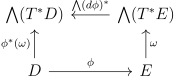

Here are some basic theorems from introductory analysis.
Theorem 1.1 (Cantor-Bernstein). If \(f:X \to Y\) and \(g:Y \to X\) are injections, \(|X|=|Y|\).
Proof. We will construct a function \(h: X \to Y\) that is a bijection. First, define \(C \subset X\) as \(\bigcup _{n \in \NN \cup 0}(g \circ f)^n(A-g(B))\). Then we define \[ h(x) = \begin{cases} f & x \in C \\ g^{-1} & x \notin C \end{cases} \] We can now check this is a bijection. For injectivity, suppose \(h(a)=h(b)\), we’d like to show \(a = b\). As \(f,g^{-1}\) are injective, it suffices to suppose \(a \in C, b \notin C\) and find a contradiction. Then \(g^{-1}(b)=h(b)=h(a)=f(a)=f\circ (g\circ f)^n(c)\), but by applying \(g\) to each side of this equation we have \(b \in C\), a contradiction.
For surjectivity, let \(y \in Y\). Suppose \(g(y) \notin C\). Then \(h(g(y)) = y\). Now suppose \(g(y) \in C\). Then \(g(y) = (g\circ f)^n(c)\) with \(c \notin g(B)\), which implies \(n\geq 1\). Then by injectivity of \(g\) we get \(y = f((g\circ f)^{n-1}(c)) = h((g\circ f)^{n-1}(c))\). □
Theorem 2.1 (Cauchy-Schwarz Inequality). In an inner product space, \(|(x,y)| \leq \Vert x \Vert \Vert y \Vert \) with equality holding iff \(x\) and \(y\) are linearly dependent.
Proof. After multiplying \(x\) by an element of \(S^1\), we may assume \((x,y)\) is real. Consider \(z = y - \frac{(x,y)}{\Vert x\Vert ^2}x\), the projection of \(y\) onto the orthogonal complement of \(x\). Indeed \(x,z\) are orthogonal as \((z,x) = (y,x) - \frac{(x,y)}{\Vert x\Vert ^2}(x,x) = 0\). Then we have: \[ 0 \leq (z,z) = (z,y) - \frac{(x,y)}{\Vert x\Vert ^2}(z,x) = (z,y) = (y,y) - \frac{(x,y)}{\Vert x \Vert ^2}(x,y) \] which after rearrangement is what we want. Note that the equality above happens iff \(z = 0\) which happens iff \(x\) and \(y\) are linearly dependent. □
Theorem 2.2 (AM-GM Inequality). Let \(x_1, \dots ,x_n\) be non-negative reals. Then \(\prod _1^nx_i\leq \big (\frac{\sum _1^nx_i}{n}\big )^n\) with equality holding iff \(x_1 = \dots = x_n\).
Proof. We suppose some of the \(x_i\) are not equal and show the strict inequality via induction. If \(\mu \) denotes \(\frac{\sum _1^nx_i}{n}\) then WLOG we may assume \(x_n>\mu >x_{n-1}\). Then define \(y = x_n+x_{n-1}-\mu \) and note \(y\) is non-negative. Then by induction, we have \[ y\prod _1^{n-2}x_i\leq \big (\frac{y+\sum _1^{n-2}x_i}{n-1}\big )^{n-1} = \mu ^{n-1} \] Multiplying by \(\mu \), we get \[ \mu y\prod _1^{n-2}x_i\leq \mu ^{n} \] so it suffices to show \(\mu y>x_nx_{n-1}\), but this is true as \[ y\mu -x_nx_{n-1} = (x_n+x_{n-1}-\mu )\mu -x_nx_{n-1} = (x_n-\mu )(\mu -x_{n-1})>0 \] □
Jensen’s Inequality is a powerful inequality. To prove it in its measure-theoretic form, we need the notion of a subderivative and a convex function.
Definition 2.3. Let \(A \subset V\) be a convex subset of a real vector space. A function \(f: A \to \RR \) is convex if \(f(tx+(1-t)y) \leq tf(x)+(1-t)f(y)\) for \(t \in [0,1]\). It is strictly convex, if the inequality is strict for \(x\neq y\),\(t\neq 0,1\).
The following lemma is obvious.
Definition 2.5. Let \(f:\RR \to \RR \) be convex. A subderivative of \(f\) at \(p\) is a \(c\) such that \(f(x)-f(p) \geq c(x-p)\). The set of subderivatives of \(f\) at \(p\) is called the subdifferential.
Lemma 2.6. If \(f\) is convex, the subdifferential at \(p\) is \([a,b]\) where \(a = \lim _{x \to p^-}\frac{f(x)-f(p)}{x-p}\), \(b = \lim _{x \to p^+}\frac{f(x)-f(p)}{x-p}\). Moreover, these limits exist and \(a \leq b\). If \(f\) is strictly convex, then \(f(x)-f(y)> c(x-y)\) when \(x \neq y\) if c is a derivative.
Proof. WLOG, \(f(p)=p=0\). Setting \(y = 0\) in the definition of convex, we get \(f(tx) \leq tf(x)\), so \(\frac{f(x)}{x}\) is increasing for all \(x>0\), and \(x<0\). Now by convexity again, \(2f(0) \leq f(\ee )+f(-\ee )\) so \(\frac{f(-\ee )}{-\ee }\geq \frac{f(\ee )}{\ee }\). Thus the limits \(a,b\) exist, and are finite, and it is clear that \([a,b]\) is the subdifferential. Running through the proof for strictly convex \(f\) shows \(\frac{f(x)}{x}\) is strictly increasing, so that the strict inequality holds. □
Lemma 2.7. If \(f\) is \(\cC ^2\), with \(f''\geq 0\), it is convex. If \(f''>0\), it is strictly convex.
Proof. By Taylor’s Theorem, one computes \[tf(x)+(1-t)f(y)-f(tx+(1-t)y) = t(f(x)-f(tx+(1-t)y)+(1-t)(f(y)-f(tx+(1-t)y))\] \[=tf''(c)(1-t)^2(y-x)^2/2+(1-t)f''(c')t^2(y-x)^2/2\], which satisfies the correct inequalities by assumption. □
Theorem 2.8 (Jensen’s Inequality). If \((\Omega ,\mu )\) is a probability measure, \(f: \RR \to \RR \) a convex function, \(g\) a \(\mu \)-integrable function, then \(f(\int _\Omega g d\mu ) \leq \int _\Omega f \circ g d\mu \). If \(f\) is strictly convex, equality holds iff \(g\) takes constant value on a set of measure \(1\).
Proof. Define \(x_0 = \int _\Omega gd\mu \). By Lemma 2.6 for \(c\), there is \(a,b\) so \(ax+b\geq f(x)\), \(ax_0+b = f(x_0)\). Then \(f(\int _\Omega gd\mu ) = f(x_0) = ax_0+b = \int _\Omega (ag+b)d\mu \leq \int _\Omega f\circ g d\mu \). Equality then holds iff \(ag+b \neq f\circ g\) on a set of measure 0. If \(f\) is strictly convex, by Lemma 2.6, this holds iff \(g\) takes constant value on a set of measure \(1\). □
Now that we have this inequality, we can prove many inequalities more quickly, especially exploiting the convexity/concavity of functions like \(\log \).
Definition 2.9. The weighted power mean with exponent \(p\) is the function \(M_p(x_1,\dots ,x_n) = (\sum w_ix_i^p)^{1/p}\) where \(x_i\) are positive reals, and \(w_i\) are weights summing to 1.
In particular, \(M_\infty \) is the maximum, \(M_2\) the square mean, \(M_1\) the arithmetic mean, \(M_0\) the geometric mean, \(M_{-1}\) the harmonic mean, and \(M_{-\infty }\) the minimum. The only one which isn’t so obvious is \(M_0\), but to see this, by L’Hopital’s Rule and continuity of the exponential function, \[\lim _{p \to 0}\big (\sum w_ix_i^p\big )^{\frac{1}{p}}=\lim _{p \to 0}e^{\log \big (\sum w_ix_i^p\big )^{\frac{1}{p}}} =e^{\lim _{p \to 0}\frac{\log \big (\sum w_ix_i^p\big )}{p}} = e^{\lim _{p \to 0}\frac{\sum w_ix_i^p \log (x_i)}{\big (\sum w_ix_i^p\big )}}\]\[ = e^{\sum w_i\log (x_i)} = \prod x_i^{w_i} \]
The following generalizes Theorem 2.2.
Theorem 2.10 (Power Mean Inequality). Let \(x_i\) be positive reals, \(w_i\) weights. Then \(p < q \implies M_p \leq M_q\), with equality holding iff the \(x_i\) with positive weights are equal.
Proof. First we will prove the inequality for the cases \(p=0\),\(q=0\). By Jensen’s inequality using concavity of \(\log \), \(\log \prod x_i^{w_i} = \sum \frac{w_i}{q}\log x_i^q \leq \frac{\log (\sum w_ix_i^q)}{q}\) for \(p>0\) and \(q=0\) case is similar. Now it suffices to prove the inequality when \(pq>0\), and note that the \(p>0\) and \(p<0\) cases are equivalent since \(\big (\sum w_ix_i^{-p}\big )^{\frac{1}{-p}} = \frac{1}{\big (\sum w_i(\frac{1}{x_i})^{p}\big )^\frac{1}{p}}\). Now note \(x^{\frac{p}{q}}\) is concave, so \((\sum w_ix_i^p)^\frac{1}{p} = (\sum w_i(x_i^q)^{\frac{p}{q}})^\frac{1}{p} \leq (\sum w_ix_i^q)^{\frac{p}{q}\frac{1}{p}} =(\sum w_ix_i^q)^{\frac{1}{q}}\). □
We can also quickly get the Hölder inequality.
Lemma 2.11. \(x,y>0 \implies xy \leq \frac{x^p}{p}+\frac{x^q}{q}\) with \(\frac{1}{p}+\frac{1}{q}=1\).
Proof. We give two proofs. Jensen’s inequality gives \(\log (xy) = \frac{\log (x^p)} p + \frac{\log (y^q)} q \leq \log (\frac{x^p}{p}+\frac{y^q}{q})\). Alternatively, it is equivalent to prove \(x^\frac{1}{p}y^\frac{1}{q}\leq \frac{x}{p} + \frac{y}{q}\), which is homogeneous so WMA y = 1, in which case, we can optimize \(x\) to get the inequality. □
Theorem 2.12 (Hölder Inequality). Let \((\Omega ,\Sigma ,\mu )\) be a measure space, \(\frac{1}{p}+\frac{1}{q}=1\) and \(f,g\) measurable functions. Then \(\Vert fg\Vert _1 \leq \Vert f\Vert _p\Vert g\Vert _q\).
Proof. By Lemma 2.11, \[\Vert fg\Vert _1 = \int _\Omega |fg|d\mu =\int _\Omega t|f|t^{-1}|g|d\mu \leq \int _\Omega t^p\frac{|f|^p}{p}d\mu + \int _\Omega t^{-q}\frac{|g|^q}{q}d\mu = \frac{t^p}{p}\Vert f\Vert _p^p + \frac{t^{-q}}{q}\Vert g\Vert _q^q\] We optimize \(t\) to get \(t = \frac{\Vert g \Vert _q^{\frac{q}{p+q}}}{\Vert f\Vert _p^{\frac{p}{p+q}}}\), and plugging this in and simplifying yields the inequality. □
The Hölder inequality can establish that \(L^p\) spaces are normed vector spaces. The triangle inequality is the hard part of the proof.
Lemma 2.13. \(|x+y|^p \leq 2^{p-1}(|x|^p+|y|^p)\) for \(p>1\).
Proof. \(f(x)=x^p\) is convex, so \(|\frac{x+y}{2}|^p\leq \frac 1 2 (|x|^p+|y|^p)\). □
Theorem 2.14 (Minkowski’s Inequality). \(\Vert f+g\Vert _p \leq \Vert f \Vert _p+\Vert g \Vert _p\).
Proof. We give two proofs, both which use Hölder inequality. By the Lemma, \(\Vert f+g\Vert _p\) is finite if \(\Vert f\Vert _p, \Vert g\Vert _p\) are. Then by Hölder inequality, \[\Vert f+g \Vert _p^p = \int |f+g|^p \leq \int |f||f+g|^{p-1}+|g||f+g|^{p-1} \]\[ \leq (\Vert f\Vert _p +\Vert g\Vert _p)\Vert (f+g)^{p-1}\Vert _{\frac{p}{p-1}} = (\Vert f\Vert _p +\Vert g\Vert _p)\Vert f+g\Vert _p^{p-1}\].
For the second proof, we claim \(\Vert f\Vert _p = \sup _{\Vert h\Vert _q=1}\Vert fh\Vert _1\), with which the theorem follows from the triangle inequality for \(L^1\). The \(\geq \) follows from the Hölder inequality, and the \(\geq \) follows from setting \(h\) to be \(f^{p-1}\) divided by its norm. Note that this proof also shows the duality between \(L^p\) and \(L^q\) (indeed they are duals as Banach spaces). □
Lemma 3.1. An infinite subset \(X\) of a compact Hausdorff space \(Y\) has a limit point.
Proof. If not, \(X\) is closed, and is a countable compact discrete space, which is a contradiction. □
Proposition 3.2 (Baire’s Category Theorem). A locally compact Hausdorff space or complete metric space \(X\) is a Baire space.
Proof. First let’s treat locally compact Hausdorff. Let \(X_n\) be closed sparse subsets of \(X\), and \(U_0\) an open set in \(X\). We can inductively produce \(\bar{U_i} \subset U_{i-1}\) that avoid \(X_1,\dots ,X_i\) by regularity. But then \(\cap _i\bar{U_i}\) is nonempty, so there is a point that avoids all \(U_i\). Similarly in the complete metric space case, we can choose the \(U_i\) in the same way with the condition that the diameter of \(U_i\) is less than \(1/n\). Then again the intersection must be a single point by completeness. □
Theorem 3.3. The unit cube \(I^n\) is compact.
Proof. Suppose we have a covering with no finite subcover. Then we can divide the unit cube into \(2^n\) pieces of half the size, and at least one of these must have the same property. We can keep doing this, getting a chain of cubes contained within one another with diameter approaching \(0\) such that this cover has no finite subcover for any of these. But the intersection of these has diameter \(0\), but contains exactly \(1\) point by taking the limiting point of a sequence of points in each of the cubes in the chain. Taking an open set surrounding this point, we get a contradiction as infinitely many cubes must be in the open set. □
Corollary 3.4 (Heine-Borel). A subset of \(\RR ^n\) is compact iff it is closed and bounded.
Proof. If a subset is compact, it is closed as \(\RR ^n\) is Hausdorff, and bounded by looking at the cover given by open balls around the origin. Conversely if a subset is closed and bounded, it is a closed subset of a large unit cube, hence is compact by Theorem 3.3. □
Corollary 3.5 (Bolzano-Weierstrass). A subset of \(\RR ^n\) is compact iff any sequence has a convergent subsequence.
Proof. ‘ Suppose any sequence has a convergent subsequence. Then the subset must be bounded or else we could take an increasingly large sequence. It must also be closed or else we could take points in decreasingly small neighborhoods of a limit point. The converse follows from Lemma 3.1. □
Lemma 3.6 (Minimum-Maximum Theorem). A map \(f:S \to \RR \) from compact \(S\) has a min and max.
Proof. The image is compact, hence closed and bounded, so attains its supremum and infimum. □
Theorem 3.7. All norms on finite dimensional \(\RR \)-vector spaces are equivalent.
Proof. We will show every norm is equivalent to \(\Vert \cdot \Vert _\infty \). To do this, let \(\Vert \cdot \Vert \) be any norm, and we will show it is continuous with respect to \(\Vert \cdot \Vert _\infty \). In particular, if \(M = \max _i\Vert \delta _i \Vert \) we have \(\Vert x\Vert \leq \sum _1^n\Vert x_i\delta _i\Vert \leq M\sum _1^n|x_i| \leq Mn\Vert x\Vert _\infty \), so we have \(|\Vert x \Vert - \Vert a \Vert | \leq \Vert x-a\Vert \leq Mn\Vert x-a \Vert _\infty \) so indeed it is continuous.
The set \(X = \{x|\Vert x \Vert _\infty = 1\}\) is compact, so its image from \(\Vert \cdot \Vert \) by Lemma 3.6 has a minimum \(m\) and a maximum \(M\). Thus \(m\) and \(M\) give the bounds we need for equivalence of norms. □
Proposition 3.9 (Intermediate Value Theorem). A map from \(D^n\) to itself that is the identity on the boundary is surjective.
Proof. If not, we can deformation retract away from the missing point to the boundary, to yield a retraction of \(D^n\) onto \(S^{n-1}\), contradicting Lemma 3.8. In the case \(n=1\) this is looking at the connected component. □
Proposition 3.10 (Brouwer Fixed Point Theorem). A map \(f:D^n \to D^n\) has a fixed point.
Proof. If not, we can consider the line going from \(f(x)\) to \(x\) and produce a retraction \(g\) that is the intersection (on the \(x\) side) of this line with the boundary, contradicting Lemma 3.8. □
Theorem 3.11. For any embedding \(i:D^k \to S^n\), \(S^n-i(D^k)\) has trivial \(\tilde{H_*}\).
Proof. We induct on \(k\), for \(k =0\) we just have \(S^n-i(D_0) = \RR ^n\). For the induction step, we replace \(D^k\) with \(I^k\). Now we split \(I^k\) into two halves \(I^{k-1}\times [0,\frac{1}{2}],I^{k-1}\times [\frac{1}{2},1]\) and by Mayer-Vietoris and induction we have \(\tilde{H}_*(S^n-I^k) \hookrightarrow \tilde{H}_*(I^{k-1}\times [0,\frac{1}{2}])\oplus \tilde{H}_*(I^{k-1}\times [\frac{1}{2},1])\) is an isomorphism. If there were a nontrivial (reduced) cycle \(\alpha \) in \(H_*(S^n-I^k)\) it would land nontrivially in one of the two summands on the right, and we could repeatedly cut these up into smaller intervals, in the limit landing in \(H_*(S^n-I^{k-1})\) in which we know it would be a boundary of a chain \(\beta \). But then as \(\beta \) is compact and covered by our cuts, it is in one of the cuts, a contradiction. □
The next theorem has the Jordan Curve Theorem as a special case:
Theorem 3.12. For any embedding \(i:S^k \to S^n,n>k\) we have \(\tilde{H}_i (S^n-i(S^k)) = \ZZ ^{\delta _{i,n-k-1}}\).
Proof. We induct on \(k\), for \(k=0\) we have \(S^n-i(S^0) \simeq S^{n-1}\). Now to induct we split \(S^k\) into to disks and use Mayer-Vietoris and Theorem 3.11 to give \(H_{m-1}(S^n-i(S^k))\cong H_{m}(S^n-i(S^{k-1})).\) □
Theorem 3.13 (Invariance of Domain). An injective map \(\RR ^n \to \RR ^n\) is open.
Proof. By Theorem 3.12, the boundary of an embedding \(D^n \to \RR ^n\) separates \(\RR ^n\) into two components, and since the boundary is closed, the interior of \(D^n\) is an connected component of this separation that is open in \(\RR ^n\). □
Lemma 3.14 (Lebesgue Number Lemma). Any open cover of a compact metric space \(X\) has a \(\delta \) (Lebesgue number) so that every \(\delta \) ball is in some open set.
Proof. Take a finite subcover \(U_1, \dots , U_n\), and consider the map \(f:X \to \RR \), \(f(x) = \sum d(x,X-U_i)\). Now this function attains a minimum \(\delta \), but \(\delta \) cannot be \(0\) as the \(U_i\) cover \(X\). Then \(\delta \) is a Lebesgue number. □
Proposition 3.15. A continuous map \(f:S \to T\) where \(S,T\) are metric spaces, and \(S\) is compact is uniformly continuous.
Proof. Take the preimages of \(\ee \) balls around each point in \(T\) to make a cover of \(S\). The Lebesgue number of this cover is a uniform \(\delta \) for this \(\ee \). □
Theorem 3.16 (Uniform Limit Theorem). A uniform limit of continuous functions to a metric space is continuous.
Proof. Let the sequence be \(f_n\) and the limit be \(f\). We need that for any \(\ee >0\) and any \(x \in X\) there is a neighborhood \(x \in U_\ee \) such that \(d(f(x),f(y))<\ee \) when \(x,y \in U_\ee \). We can choose large enough \(n\) so we have \(\forall x,d(f(x),f_n(x))<\ee \), and a neighborhood \(U\) satisfying \(\ee \) for \(f_n\) Then we have in \(U\): \[ d(f(x),f(y)) \leq d(f(x),f_n(x))+d(f_n(x),f_n(y))+d(f_n(y),f(y)) < \ee +\ee +\ee =3\ee \] so we are done. □
Theorem 3.17. If a sequence of continuous functions \(f_n\) from a compact space \(X\) to a metric space \(Y\) converge to a function \(f\), they uniformly converge to that function, which is continuous by Theorem 3.16.
Proof. For any \(\ee >0\), there is a neighborhood around each point \(x\in X\), \(U_x\) such that \(f(y)\) is within \(\ee /2\) of \(f(x)\) for any \(y \in U_x\). Then make a finite cover of these \(U_x\) and take the maximum \(N\) for each of the corresponding points such that \(f_N\) is within \(\frac{\ee }{2}\) for these points. Then by the triangle inequality every point simultaneously satisfies \(|f(x)-f_N(x)|\leq \ee \) for large enough \(N\). □
Theorem 3.18 (Ascoli). If \(f_n:X \to Y\) form a uniformly equicontinuous sequence of maps between compact metric spaces \(X\) and \(Y\), there is a uniformly convergent subsequence.
Proof. \(X\) has a countable dense subset \(x_n\), so starting with \(x_1\) we can look at \(f_i(x_1)\), which has a limit point by Lemma 3.1. This gives a subsequence which converges at \(x_1\). We can then inductively produce more subsequences for each \(x_n\) and take a diagonal sequence \(g_n\). Every compact metric space is complete by Lemma 3.1, so it suffices to show that \(g_n\) is uniformly Cauchy. To do so, fix \(\ee >0\), and cover \(X\) with finitely many neighborhoods around the \(x_i\) so each \(f_n\) varies at most \(\frac{\ee }{3}\) in the neighborhood. Each neighborhood contains an \(x_i\) so choose the maximum of the \(N\)s so for \(j\geq N\) the \(g_j(x_i)\) differ by at most \(\frac{\ee }{3}\). Then for any \(x \in X\), \(j,k>N\) we have \(d(g_j(x),g_k(x)) \leq d(g_j(x),g_j(x_i)) + d(g_j(x_i),g_k(x_i)) + d(g_k(x_i),g_k(x)) < \ee \). □
Let \(\FF \) from now on denote \(\CC \) or \(\RR \).
Proposition 4.1. A function \(f:\RR ^n \to \RR \) that has a local extremum at a point \(a \in U\) and is differentiable there has a critical point.
Proof. It suffices to consider \(n=1\), as this implies each of the \(\partial _if(a)\) in the general case is \(0\). In this case, note that if \(|f'(a)|>0\) then for small enough \(\ee \) we have \(\frac{|\ee |}{|h|}<|f'(a)|\) so the function decreases on one side and increases on the other. □
Proposition 4.2 (Mean Value Theorem). If \(f,g:[a,b]\to \RR \) are continuous, and differentiable on the interior, then there is a \(c\) so that \[ (g(b)-g(a))f'(c)=(f(b)-f(a))g'(c) \]
Proof. Consider the function \(h = (g(b)-g(a))f(x)-(f(b)-f(a))g(x)\). \(h(a)=g(b)f(a)-f(b)g(a)=h(b)\), so either \(h\) is constant for which any point works, or it attains some maximum/minimum on the interior of the interval, which by Proposition 4.1 yields a point \(c\) with \(h'(c) = 0\). □
Note that the Mean Value Theorem is most often used in the case where \(g(x) = x\).
The chain rule is the theorem that in the category \(\Diff \), \(d\) is an endofunctor that takes a manifold to its tangent space, and a map \(f\) to a map \(df\) (the pushforward, total derivative, or derivative) on tangent spaces. In the case of a map between open sets of \(\FF ^n\), the tangent space is canonically identified with \(\FF ^n \times \FF ^n\). Here is the classical statement:
Theorem 4.3 (Chain Rule). Suppose we have \(U \subset \FF ^l, V \subset \FF ^m, W \subset \FF ^n\), and there are maps \(f:U \to V, g:V \to W\) such that \(f\) is differentiable at \(a\), and \(g\) is differentiable at \(f(a)\). Then \(g \circ f\) is differentiable and \((g \circ f)'(a) = g'(f(a))f'(a)\).
Proof. We define \(k = f(a+h)-f(a)\). Then: \[ (g\circ f)(a+h)-(g\circ f)(a) = g(f(a+h))-g(f(a)) = g(f(a)+k)-g(f(a)) \] \[ = g'(f(a))k + \ee _g(k) = g'(f(a))(f(a+h)-f(a)) + \ee _g(k). = g'(f(a))(f'(a)h+\ee _f(h)) + \ee _g(k) \] \[=g'(f(a))f'(a)h + \ee \] where \(\ee = g'(f(a))\ee _f(h) + \ee _g(k)\) so it suffices to show \(\frac{\Vert \ee \Vert }{\Vert h\Vert } \to 0\) as \(h \to 0\). With \(\Vert \cdot \Vert _o\) denoting the operator norm we have: \[ \frac{\Vert \ee \Vert }{\Vert h\Vert } \leq \frac{\Vert \ g'(f(a))\Vert _o \Vert e_f(h)\Vert }{\Vert h\Vert } + \frac{\Vert e_g(k)\Vert }{\Vert k\Vert }\frac{\Vert f(a+h)-f(a)\Vert }{\Vert h \Vert } \] \[= \frac{\Vert \ g'(f(a))\Vert _o \Vert e_f(h)\Vert }{\Vert h\Vert } + \frac{\Vert e_g(k)\Vert }{\Vert k\Vert }\bigg (\frac{\Vert f'(a)\Vert _o\Vert h \Vert }{\Vert h \Vert } + \frac{\Vert \ee _f(h)\Vert }{\Vert h \Vert }\bigg ) \] which tends to \(0\) by hypothesis. □
Corollary 4.4 (Product & Quotient Rules). \[\partial _i(f(x)g(x)) = \partial _if(x)g(x) + \partial _ig(x)f(x)\] \[\partial _i\frac{f(x)}{g(x)} = \frac{\partial _if(x)g(x)-\partial _ig(x)f(x)}{g(x)^2}\]
Proof. Use the chain rule on the composite \(x \mapsto (f(x),g(x)) \mapsto f(x)g(x)\) and \(x \mapsto (f(x),g(x)) \mapsto \frac{f(x)}{g(x)}\). □
Corollary 4.5. If the inverse of \(f\) is differentiable, \((f^{-1})'(f(x)) = f'(x)^{-1}\).
Proof. Apply the chain rule to \(f^{-1}\circ f\). □
Corollary 4.6 (Mean Value Theorem Many Variables). If \(f:\RR ^n \to \RR \) is continuous at \(a,b\) and differentiable on a neighborhood which contains the line segment strictly between \(a\) and \(b\), then there is a \(c\) on this line segment satisfying \(f(b)-f(a) = f'(c)(b-a)\).
Proof. Consider the function \(g:[0,1] \to U\) going to the straight line between \(a\) and \(b\). By Proposition 4.2 we have \((f\circ g)'(c) = f(b)-f(a)\), and we can use the chain rule to get \((f\circ g)'(c)= f'(g(c))g'(c)=f'(g(c))(b-a)\). □
Corollary 4.7 (Mean Value Inequality). If \(f:\RR ^m \to \RR ^n\) is continuous at \(a,b\) and differentiable on a neighborhood which contains the line segment strictly between \(a\) and \(b\), then there is a \(c\) on the line segment such that \(\Vert f(b)-f(a)\Vert _2 \leq \Vert f'(c)\Vert _o \Vert b-a\Vert _2\).
Proof. Let \(u\) be the unit vector in the direction of \(f(b)-f(a)\). Then let \(U(x) = u \cdot x\), so \(U\circ f\) is a real valued function to which we can apply Corollary 4.6. We get \((U\circ f)(b)-(U\circ f)(a) = (U\circ f)'(c)(b-a) = U'(f(c))f'(c)(b-a) = u \cdot (f'(c)(b-a))\). Then we have via Cauchy-Schwarz inequality, \[ \Vert f(b)-f(a)\Vert _2 = |(U\circ f)(b)-(U\circ f)(a)| = |u \cdot (f'(c)(b-a))| \] \[ \leq \Vert u \Vert _2\Vert f'(c)(b-a)\Vert \leq \Vert f'(c)\Vert _o\Vert b-a\Vert _2 \] □
Corollary 4.8. If \(f:\RR ^m \to \RR ^n\) is differentiable in a convex bounded open set \(U\), and \(\Vert f'(x)\Vert _o\) is bounded on \(U\), then \(f\) is uniformly continuous.
Proof. Corollary 4.7 gives \(\Vert f(x)-f(y) \Vert _2 \leq M\Vert x-y\Vert \). □
Corollary 4.9 (L’Hôpital’s Rule). If \(f,g:\RR ^n \to \RR \) are continuous, differentiable in a deleted neighborhood of \(0\), \(f(0) = g(0) = 0\), and \(\lim _{x \to 0}g'(x) \neq 0,\lim _{x \to 0}f'(x)\) exist, then \[ \lim _{x \to 0}\frac{f(x)}{g(x)} = \lim _{x \to 0}\frac{f'(x)}{g'(x)} \]
Proof. Use Proposition 4.2 on a small interval \((-\delta ,\delta )\) around the origin, to get \(\frac{f(x)}{g(x)} = \frac{f(x)-f(0)}{g(x)-g(0)} = \frac{f'(x_0)}{g'(x_0)}\) for some \(x_0\) in the interval. Letting \(\delta \to 0\) we are done. □
Theorem 4.10. If \(f:\FF ^m \to \FF ^n\) has all partial derivatives which are continuous near a point \(a\), then \(f'(a)\) exists.
Proof. It suffices to prove this when \(n=1\) as being differentiable is equivalent to being differentiable in each component. Now fix an \(h\) in a small enough ball. We have by Proposition 4.2: \[f(a_1+h_1,\dots ,a_i+h_i,a_{i+1},\dots ,a_n) - f(a_1+h_1,\dots ,a_{i-1}+h_{i-1},a_{i},\dots ,a_n)\] \[= h_i\partial _if(a_1+h_1,\dots ,a_{i-1}+h_i, \alpha _i,a_{i+1},\dots ,a_n)\] where \(\alpha _i \in (a_i,a_i+h_i)\). Now we have \[f(a+h)-f(a) = \sum _ih_i\partial _if(a_1+h_1,\dots a_{i-1}+h_{i-1},\alpha _i,a_{i+1}+h_{i+1},\dots ,a_n) \] \[=h(\partial _if(a)) + \ee \] where \[\frac{\Vert \ee \Vert }{\Vert h\Vert } \leq \sum _i\Vert \partial _if(a_i+h_i,\dots ,\alpha _i,\dots ,a_n)-\partial _if(a)\Vert \] which tends to \(0\) as \(h \to 0\) by continuity of the partial derivatives. □
Proposition 4.11. If \(f:\FF ^2\to \FF \) is continuous near a point \(a\), has partials \(\partial _1f,\partial _2f,\partial _1\partial _2f,\partial _2\partial _1f\) near \(a\), and the mixed partials \(\partial _1\partial _2f,\partial _2\partial _1f\) are continuous near \(a\), then they are equal at \(a\).
Proof. By Proposition 4.2, we have \[\partial _1\partial _2f(x'',y'') = \partial _2f(x+h,y'')-\partial _2f(x,y'') \]\[= f(x+h,y+k)-f(x+h,y)-f(x,y+k)+f(x,y)\]\[ = f(x+h,y+k)-f(x,y+k)-f(x+h,y)+f(x,y)\]\[ = \partial _1f(x',y+k)-\partial _1f(x',y) = \partial _2\partial _1f(x',y') \] so letting \(k,h \to 0\) by continuity we are done. □
Proposition 4.12 (One-variable Taylor Expansion). If \(f:\RR \to \RR \) has continuous partial derivatives up to \(k+1^{th}\) order near \(a\), then for small enough \(h\) we have \[f(a+h) = \sum _0^k\frac{1}{i!}f^{(i)}(a)h^i + \frac{1}{(k+1)!}f^{(k+1)}(\alpha )h^{k+1} \] with \(\alpha \in (a,a+h)\).
Proof. Let \(R(x)\) be \(f(a+x)-\sum _0^k\frac{1}{i!}f^{(i)}(a)x^i - \frac{1}{(k+1)!}cx^{h+1}\) such that \(c\) is chosen so that \(R(h)=0\). We want to show \(c = f^{(k+1)}(\alpha )\) as above. To do this, use Proposition 4.2 many times, first on the fact that \(R(0)=R(h) = 0\) to get a \(a_1\) where \(R'(a_1)=0\), and then repeating this on \(R'(0)=R'(a_1)=0\). Then finally we will have a \(a_{k+1}\) with \(R^{(k+1)}(a_{k+1}) = 0\), at which point taking the \(k+1^{th}\) derivative yields \(0=R^{(k+1)}(a_k) = f^{(k+1)}(a+a_{k+1})-c\), so we are done. □
Corollary 4.13 (Many-variable Taylor Expansion). If \(f:\RR ^n \to \RR \) has continuous partial derivatives up to \(k+1^{th}\) order near \(a\), for small enough \(h\) we have \[f(a+h) = \sum _0^k\sum _{j_1,\dots ,j_i = 1}^n\partial _{j_1}\dots \partial _{j_i}f(a)\prod _{l=1}^ih_l + \sum _{j_1,\dots ,j_{k+1} = 1}^n\partial _{j_1}\dots \partial _{j_{k+1}}f(\alpha )\prod _{l=1}^{k+1}h_l\] with \(\alpha \) in the line segment between \(a\) and \(a+h\).
Proof. Apply the chain rule to extend the one-variable case by composing \(f\) with the line between \(a\) and \(a+h\). □
Lemma 5.1 (Raabe’s Test). For the series \(\sum _0^\infty c_n\), \(c_i \in \RR \) if \(R_n = n(1-\frac{c_{n+1}}{c_n})\) is larger than \(R>1\) for sufficiently large \(n\), the series is absolutely convergent.
Proof. WLOG \(c_n \geq 0\). Then note that \(R_n-1 = \frac{1}{c_n}(c_n(n-1)-c_{n+1}n)\) so \(0 \leq c_n = \frac{c_n(n-1)-c_{n+1}n}{R_n-1}\). By hypothesis \(R_n-1\) stays away from \(0\) for large \(n\) so it suffices to show \(c_n(n-1)-c_{n+1}n\), which is positive for large \(n\), converges. But \(\sum _1^mc_n(n-1)-c_{n+1}n = -c_{m+1}m\) is monotonically increasing for large \(m\) and bounded above by \(0\) so converges to a limit. □
Proposition 5.2. Every power series \(\sum _0^\infty c_nz^n\), \(c_n \in \CC \) has a radius of convergence \(R\) given by Hadamard’s formula \(\frac{1}{R} = \limsup |c_n|^{\frac{1}{n}}\)
Proof. For any \(r<R\) and large \(n\) we have \(|c_n|^{\frac{1}{n}}< \frac{1}{r}\) so if \(|z|<r<R\) we have \(\sum _n^\infty |c_n|z^n < \sum _n^\infty \frac{z^n}{r^n}\) so we have absolute convergence. Similarly if \(|z|>r>R\) there are infinitely many terms so that \(|c_n|\geq \frac{1}{r^n}\) so the series diverges. □
Proposition 5.3. Every power series \(\sum _0^\infty c_nz^n\) is holomorphic in its radius of convergence, and its derivative, \(\sum _0^\infty nc_nz^{n-1}\) has the same radius of convergence.
Proof. First note by Proposition 5.2 since \(n^{1/n} \to 1\) as \(n \to \infty \) we have that \(\sum _0^\infty nc_nz^{n-1}\) has the same radius of convergence.
Let \(z_0,z_0+h\) lie in radius \(r\), which is less than the radius of convergence. \[\left |\frac{\sum _0^\infty c_j(z_0+h)^j-\sum _0^\infty c_jz_0^j}{h}-\sum _0^\infty c_jjz_0^{j-1}\right |\] \[= |\ee _n(h)| + \left |\frac{\sum _{n+1}^\infty c_j(z_0+h)^j-\sum _{n+1}^\infty c_jz_0^j}{h}\right |+|\sum _{n+1}^\infty c_jjz_0^{j-1}|\] where \(\ee _n(h)\) is the error from the \(n^{th}\) partial sum’s approximation by its derivative. Since \(a^j-b^j = (a-b)(a^{j-1}+a^{j-2}b+\dots +b^{j-1})\) we have \(|\frac{(z_0+h)^j-z_0^j}{h}|\leq jr^{j-1}\). For any \(\ee >0\), we can choose \(n\) large enough so that \(\sum _{n+1}^\infty jc_jr^{j-1}<\ee \). Afterwards we can choose \(h\) small enough so \(\ee _n(h)<\ee \). Then continuing from above we get \[\leq \ee + \ee + \ee = 3\ee \] concluding the proof. □
Proposition 5.4 (Abel’s Theorem). If a power series \(f(x) = \sum _0^\infty c_ix^i\) converges at an endpoint of its radius of convergence \(R\), it converges uniformly and hence is continuous on \([0,R]\).
Proof. WLOG,\(R = 1\). Let \(A_n = \sum _0^{n-1}c_i\). We have then for \(x \in [0,1]\) \[ |\sum _n^mc_ix^i|=|\sum _n^mA_{i+1}x^i-\sum _n^mA_ix^i|=|\sum _n^m(f(1)-A_{i+1})x^i-\sum _n^m(f(1)-A_i)x^i|\]\[ = |\sum _{n+1}^{m+1}(f(1)-A_i)x^{i-1}-\sum _n^m(f(1)-A_i)x^i |\]\[= |\sum _{n+1}^{m}(f(1)-A_i)(x^{i-1}-x^i)-(f(1)-A_i)x^n+(f(1)-A_i)x^{m}| \] now choosing \(N\) large enough so \(|f(1)-A_i|<\ee \) for \(i>n\) and noting \(x \in [0,1]\) \[\leq \sum _{n+1}^{m}|(f(1)-A_i)|(x^{i-1}-x^i)+|(f(1)-A_i)|x^n+(f(1)-A_i)x^{m}|\]\[\leq (x^n-x^m)\ee +x^n\ee +x^m\ee \leq 3\ee \] and we are done as the partial sums are uniformly Cauchy. □
Proposition 5.5. If \(f(x) = \sum _0^\infty c_iz^i\) converges within radius \(R\), and \(a\) is within this radius, \(f(a+x)\) converges and is analytic within radius of \(R-|a|\).
Proof. Inside \(|z|<R-|a|\) the power series absolutely converges, and we would like to recenter around 0. WLOG \(a\) is real and non-negative. For \(0<x<R-|a|\) we have \[ \sum _0^\infty c_i(a+x)^i = \sum _0^\infty c_i \sum _{j=0}^i\binom i j a^{i-j}x^j \] We can then split the inner sum up into separate terms, still absolutely convergent as everything is non-negative, and then we can collect like powers of \(x\) to get \[\sum _0^\infty c_i(a+x)^i = \sum _0^\infty \Big (\sum _m^\infty c_i\binom i m a^{i-m}\Big )x^m\] so \(f(a+z)\) has a power series that converges on the interval \((0,R-|a|)\). Hence its radius of convergence is at least \(R-|a|\). □
Lemma 5.6. The composite of two \(\FF \)-analytic functions \(\FF \to \FF \) is analytic.
Proof. Real analytic functions are restrictions of complex analytic ones, and by the chain rule for holomorphic functions, the composite is analytic. □
Lemma 5.7. \((1+z)^a\) is holomorphic within radius \(1\) around the origin, its power series given by \(\sum _0^\infty \binom a j z^j\). It converges absolutely and uniformly on the interval \([-1,1]\) when \(a>0\).
Proof. That this is analytic follows from Lemma 5.6, and that it is holomorphic of radius \(1\) comes from Hadamard’s formula. Now when \(z \in [-1,1]\), for \(n>a>0\) we have \(n\bigg (1-\Big |\frac{\binom a{n+1}}{\binom a n}z\Big |\bigg ) \geq n\bigg (1-\Big |\frac{\binom a{n+1}}{\binom a n}\Big |\bigg ) = n\big (1-\frac{n-a}{n+1}\big ) = \frac{n(1+\alpha )}{n+1}\) which is larger than \(1\) for sufficiently large \(n\) so by Lemma 5.1 and Theorem 3.17 we have the last statement. □
Lemma 5.8. The function \(|x|\) can be uniformly approximated by polynomials in a bounded interval.
Proof. WLOG the interval is \([-1,1]\). By Lemma 5.7 \((1-t)^{1/2}\) is uniformly approximated by its Taylor expansion in this interval, and we can set \(t = 1-x^2\) we get \((x^2)^{1/2} = |x|\) is as well. □
Theorem 5.9 (Stone-Weierstrass). If \(S\) is compact, any \(\RR \)-subalgebra of \(\cC (S,\RR )\) that separates points is dense.
Proof. Let \(A\) be a \(\RR \)-subalgebra of \(\cC (S,\RR )\) that separates points. If \(f \in \bar{A}\), then \(|f| \in \bar{A}\) as \(f\) has a bounded image so by Lemma 5.8 \(|f|\) can be approximated uniformly by polynomials in \(f\), which are in \(\bar{A}\).
As a consequence, \(\max (f,g), \min (f,g) \in \bar{A}\) whenever \(f,g\) are as they are linear combinations of \(f,g,|f|,|g|\).
Now for any \(\ee >0,h \in \cC (S,\RR )\) we can approximate \(h\) up to \(\ee \) as follows: for each \(a \in S\) choose \(f_{a,b}\) for each \(b\) so that \(f(a) = h(a),f(b) = h(b)\). Then in a small neighborhood of \(b\), \(f_{a,b}(x)>h(x)-\ee \), but \(S\) is compact so finitely many such neighborhoods suffice to have \(f_a = \max _{b_i}f_{a,b_i}\) be at least \(h(x)-\ee \) everywhere. Now we can similarly choose small neighborhoods for each \(a\) so that \(f_a < h(x)+\ee \), and once again finitely many suffice so that \(\min _{a_i}{f_{a_i}}\) is our desired approximation. □
There is an analogous version for \(\cC (S,\CC )\).
Corollary 5.10. If \(S\) is compact, any \(C^*\)-subalgebra of \(\cC (S,\CC )\) that separates points is dense.
Proof. Let \(A\) again be such a subalgebra. As \(A\) is closed under conjugation, it contains the real and imaginary parts of any element \(f\). Then by Theorem 5.9 the real and imaginary parts of any function \(h\) are in \(\bar A\) so \(h\) is as well. □
Lemma 6.1 (Adjugates). Let \(M\) be a free \(R\)-module. Given \(f \in \End _R(M)\), there is an element \(\adj (f)\) such that \(f\adj (f) = \adj (f)f=1_M\).
Proof. It suffices to prove this in the universal ring \(R=\ZZ [x_{ij}]\), \(1\leq i,j\leq n\), with an endomorphism \(f\) given by the matrix \((x_{ij})\). We have a natural isomorphism \(j:M \cong \Hom (\wedge ^{n-1}M,\wedge ^{n}M)\) so that \(j(x_1)(x_2\wedge \dots \wedge x_n) = x_1\wedge \dots \wedge x_n\). To get \(\adj f\), take the endomorphism corresponding to \(\Hom (\wedge ^{n-1}f,1_{\wedge ^{n}M})\). Now we have \(j(\adj (f)f)\) takes \(x_2\wedge \dots \wedge x_n \mapsto f(x_2)\wedge \dots \wedge f(x_n) \mapsto f(x_1)\wedge \dots \wedge f(x_n)\) which is \(j(det(f)1_M)\). Note that since \(\det (f)\) is nonzero, \(\adj (f)\) has nonzero determinant, so is injective as \(R\) is an integral domain. Now we have \(\adj (f)f\adj (f)=\adj (f)\det (f)\) so by injectivity \(f\adj (f) = \det (f)1_M\). □
Lemma 6.2. If \(Av = \lambda v\) then for any polynomial \(p\), \(p(A)v = p(\lambda )v\).
Proof. \(p(A)v=p(\lambda )v\) is a linear combination of \(A^nv=\lambda ^nv\). □
Theorem 6.3 (Cayley-Hamilton). Let \(M\) be a finitely generated free \(R\)-module, and \(f \in \End (M)\). Then \(\chi _f(f)\equiv 0\)
Proof. \(f\) turns \(M\) into a \(R[T]\)-module, and we can extend scalars via \(R' = R[x]\otimes _R R[T]\) and \(M' = R[x]\otimes _R M\). Then \(\chi _f(x)\) is the determinant of \(y = x\otimes 1_M - 1\otimes T \in R'\). \(\adj (y)\) commutes with \(y\) by Lemma 6.1, and since \(x\otimes 1_M\) is central it commutes with \(1\otimes T\) as well, but then it commutes with all of \(R'\). Now we look at \(R'/(y),M'/(y)M'\) which substitutes \(x\) as \(T\), and note that \(\adj (y)\) has a well-defined action on the quotient as it commutes with \(R'\). \(M'/(y)M'\cong 1\otimes M\) since \(g(x)\otimes m = (g(x)\otimes 1)(1\otimes m) = (1 \otimes g(T))(1\otimes m) = 1 \otimes g(T)m\). Then since \(y\) annihilates \(M'/(y)M'\), \(y\adj (y)\) does as well, but this is multiplication by \(\chi _f(x)\otimes 1=1\otimes \chi _f(T)\), which is the action of \(\chi _f(f)\). □
Corollary 6.4 (Determinant Trick). If \(f\) is an endomorphism of \(M\), an \(R\)-module generated by \(n\) elements, and \(fM\subset IM\), \(f\) satisfies \(f^n+a_{1}f^{n-1}+\dots +a_n \equiv 0\) where \(a_i \in I^i\).
Proof. By projectivity of free modules, it suffices to consider a free module, but then this follows from Theorem 6.3 by noting that the coefficients of \(\chi _f(x)\) are of the form described. □
Corollary 6.5 (Nakayama’s Lemma). If \(M\) is a finitely generated \(R\)-module and \(IM=M\), then there is an \(a\equiv 1\pmod{I}\) such that \(aM = 0\).
Proof. Apply Corollary 6.4 to the identity map \(1_M\) and use the fact that \(1_MM\subset IM\). □
Corollary 6.6 (Nakayama’s Lemma). If \(M\) is a finitely generated module over a local ring \(R\) with maximal ideal \(m\) and \(mM=M\), then \(M=0\).
Proof. By Corollary 6.5 \(aM=0\) for \(a\equiv 1\pmod{m}\) but then \(aM=M\). □
Corollary 6.7 (Nakayama’s Lemma). If \(M\) is a finitely generated module over a local ring \(R\) with maximal ideal \(m\) and \(R\) and \(M = N+mM\) then \(M=N\).
Proof. Apply Corollary 6.6 to \(M/N\). □
Corollary 6.8 (Nakayama’s Lemma). If \(M\) is a finitely generated module over a local ring \(R\) with maximal ideal \(m\) and the image of \(m_1,\dots ,m_n\) generate \(M/mM\), then \(m_1,\dots ,m_n\) generate \(M\).
Proof. Apply Corollary 6.7 with \(N = \sum _1^nm_iM\). □
Note if the ring is not local, we can replace \(m\) by the Jacobson radical and Nakayama’s Lemma still holds.
Proposition 6.9. Every endomorphism \(f:V\to V\) on a finite dimensional vector space \(V\) over \(F\) has a minimal polynomial \(\mu _f\), satisfying \(\mu _f(f)=0\), \(g(f)=0 \implies \mu _f|g\), and its roots are the eigenvalues.
Proof. Viewing \(V\) as a \(F[T]\) module, since \(F[T]\) is a PID, everything is immediate except the last part, which follows since \(f(v)=\lambda v\) so by Lemma 6.2 \(\mu _f(f)(v)=\mu _f(\lambda )v\) but the LHS is \(0\) and \(v\) is not so we are done. □
Proposition 6.10. Submodules \(M\) of \(R^n\), a finite generated free module over a PID are after a change of basis of the form \(\bigoplus _1^n x_ir_iR\) with \(x_i|x_{i+1} \in R\) and \(\bigoplus _1^n r_iR = R^n\) (the \(r_i\) are the change of basis). This representation is unique up to units and the \(x_i\) are called the invariant factors.
Proof. Choose a map \(f_1:R^n\to R\) where the image of \(M\) is maximized (this uses PID). Let \(y_1\) be an element sent to a generator of the image, \(x_1\), which WLOG is nonzero. Now if \(\pi _i\) is the \(i^{th}\) projection, then \(x_1|\pi _i(y_1)\) for all \(x \in R^n\) by maximality of \(f_1\), so we can let \(r_1 = \frac{y_1}{x_1}\). Now \(r_1\) gets sent to \(1\) by \(f\), so we can project orthogonal to \(r_1\) via a section \(s_1:R \to R^n\) taking \(1 \mapsto r_1\). Our projection \(o_1(x) = x-s_1\circ f_1(x)\). This section gives \(R^n = r_1R\oplus o_1(R)\). The projection to \(o_1(R)\) is surjective, and by removing an appropriate generator and localizing at \((0)\), we see that our new module must be free of rank \(n-1\). Now we apply induction to get \(y_2,\dots ,y_n\) and \(r_2,\dots ,r_n\), and by looking at \(f_1\) we get \(x_1|x_2\). Uniqueness also follows from induction. □
Corollary 6.11 (Smith Canonical Form). A map \(f:M \to N\) between finitely generated free modules over a PID of ranks \(n\) and \(m\) has a Smith Canonical Form, ie. is represented by a matrix of the form \[\begin{pmatrix} x_1 & &\\ & \ddots & \\ & & x_{\min{(n,m)}} \end{pmatrix}\] with \(x_i|x_{i+1}\). This representation is unique up to units.
Proof. The image is a submodule of \(R^m\) so this is a reformulation of Proposition 6.10. □
Corollary 6.12 (Finitely Generated Modules over PIDs). A finitely generated module over a PID is of the form \(R^m \oplus \bigoplus _1^nR/(d_i)\) where \(d_i|d_{i+1}\). Moreover \(m\) is unique, and the \(d_i\) are unique up to units.
Proof. A finitely generated module over a PID is a quotient of a finite rank free module, which has the correct form according to Proposition 6.10. □
Corollary 6.13 (Rational Canonical Form). Every endomorphism \(f:V\to V\) of a finite dimensional vector space over \(F\) has a unique Rational Canonical Form, ie. is represented by a matrix of the form \[\bigoplus _{i=1}^n\begin{pmatrix} 0&0&0&\dots& -a_0\\ 1&0&0&\dots& -a_1\\ 0&1&0&\dots& -a_2\\ \vdots& \vdots& \vdots& \ddots& \vdots \\ 0&0&0&\dots& -a_{k_i-1} \end{pmatrix} \] where the monic polynomials (invariant factors) \(f_i(x)=\sum _1^{k_i}a_ix^i\) satisfy \(f_i|f_{i+1}\). \(f_n\) is \(\mu _f(x)\) and \(\prod _if_i\) is \(\chi _f(x)\)
Proof. View \(V\) as a module over \(F[T]\), and we get \(V \cong \sum _1^nF[T]/(f_i)\) from Corollary 6.12. Then we are done by picking \(1,T,\dots ,T^{k_i-1}\) as a basis. □
Corollary 6.14. If \(A\) a matrix over \(F\), the invariant factors can be computed by finding the Smith Canonical Form of \(xI-A\).
Proof. If \(V\) is dimension \(n\) we can consider the \(F[T]\) module homomorphism \(F[T]^n \to V\) mapping the generators \(r_i\) surjectively onto an \(F\)-basis \(v_i\) of \(V\). Now the elements \(y_i=Tr_j-\sum _1^i(a_{ij}r_i)\) are in the kernel but note that \(\sum _iy_iF[T] + \sum _ir_iF = \sum _ir_iF[T] = F[T]^n\), so \(y_i\) actually generate the kernel. The \(y_i\) have the relations matrix \(xI-A^{t}\), so by Corollary 6.11 after a change of basis it is in Smith Normal Form with invariant factors \(f_1,\dots ,f_n\), so the kernel is of this form for an appropriate set of generators, and \(V \cong \bigoplus _1^nF[T]/(f_n)\). □
Note that Corollary 6.12 also can be represented as \(R^m \oplus \bigoplus R/(p^i)\) where \(p\) varies over primes, and similarly Corollary 6.13 has a representation in this way.
Corollary 6.15 (Jordan Canonical Form). Every endomorphism \(f:V\to V\) of a finite dimensional vector space over \(F\) has a unique Jordan Canonical Form after extending scalars to an algebraic closure, ie. is represented by a matrix of the form \[\bigoplus _{i=1}^n \begin{pmatrix} \lambda _i&1&0&\dots& 0\\ 0&\lambda _i&1&\dots& 0\\ 0&0&\lambda _i&\dots& 0\\ \vdots& \vdots& \vdots& \ddots& \vdots \\ 0&0&0&\dots& \lambda _i \end{pmatrix} \] Each summand is called a Jordan block.
Proof. As an \(F[T]\)-module, decompose \(V \cong \bigoplus _{i=1}^n F[T]/(T-\lambda _i)^j_i\), and choose as a basis for each summand \(1,T-\lambda _i,\dots ,(T-\lambda _i)^{j_i-1}\). □
Corollary 6.16 (Diagonalization Theorem). A matrix is diagonalizable iff its Jordan Canonical Form is diagonal iff its minimal polynomial is separable.
Proof. By uniqueness of the Jordan Canonical Form the first statement is true, and since the minimal polynomial is the LCM of the minimal polynomials of the Jordan blocks, so it must have distinct roots. □
Proposition 6.17. Commuting diagonalizable endomorphisms \(A,B\) are simultaneously diagonalizable.
Proof. If \(v\) has eigenvalue \(\lambda \) for \(A\), then \(BAv = ABv = \lambda Av\), so \(B\)’s \(\lambda \)-eigenspace is \(A\)-invariant, so we can simultaneously diagonalize. □
Lemma 7.1. If \(f:\Sym ^2V\to F\) is a map of \(F\)-vector spaces which is nontrivial, and \(\ch (F)\neq 2\), there is an element so that \(f(v\otimes v)\neq 0\).
Proof. There is some \(v_1,v_2\) such that \(f(v_1\otimes v_2)\neq 0\). Now WLOG, \(v_1\neq v_2\) \(f(v_1\otimes v_1)=f(v_2\otimes v_2)=0\), so we have \(\sum _{1\leq i,j\leq 2}f(v_i\otimes v_j) = f((v_1+v_2)\otimes (v_1+v_2))\neq 0\) □
Proposition 7.2 (Decomposition Theorem). If \(f:\Sym ^2V\to F\) is a map of \(F\)-vector spaces which is nontrivial, for any element \(v \in V\) so that \(f(v\otimes v)\neq 0\), \(V \cong V'\oplus vF\), where \(V'\) consists of vectors \(f\)-orthogonal to \(v\).
Proof. \(\pi (x) = x-v\frac{f(v\otimes x)}{f(v\otimes v)}\) is a projection onto \(V'\). □
Corollary 7.3 (Graham-Schmidt Theorem). If \(f:\Sym ^2V\to F\) is a map of \(F\)-vector spaces, \(V\) is finite dimensional, and \(\ch (F)\neq 2\), then \(V\) has an \(f\)-orthogonal basis. Hence \(f\) is represented by a diagonal matrix.
Corollary 7.4 (Sylvester’s Law of Inertia). If \(f:\Sym ^2V\to \RR \) is a map of \(\RR \)-vector spaces, \(V\) is finite dimensional, then \(f\) is represented by a unique matrix of the form \(I_n\oplus -I_m\oplus 0_r\). (Congruent real symmetric matrices have the same rank and signature).
Proof. Once we have diagonalized a matrix representing \(f\) from Corollary 7.3, we can scale each diagonal by a square, giving \(1,-1,0\). This form is unique as \(V\) decomposes into \(V_+\),\(V_-\),\(V_0\) where \(V_+\) is the span of vectors \(v\) with \(f(v\otimes v)=1\) and similarly for the other two. By orthogonality, \(f\) is positive definite in \(V_+\) and negative definite in \(V_-\), so these subspaces, and hence the rank and signature, are invariant. □
Proposition 7.5 (Sylvester’s Criterion). A symmetric real matrix \(A\) is positive definite iff the principle minors are positive, and negative iff the odd principle minors are negative and the even ones positive.
Proof. If \(A\) is positive definite, it is of the form \(P^tP\) for invertible \(P\), so \(\det (A)=\det (P)^2>0\). Every principle submatrix is positive definite on the corresponding subspace so the principle minors are positive. Conversely if \(A\) has positive principle minors, we induct. Write \(A = BA'B^t\), \[A = \begin{pmatrix} A_0&a\\ a^t&\alpha \end{pmatrix}, B = \begin{pmatrix} I_{n-1}&0\\ a^tA_0^{-1}&1 \end{pmatrix}, A' = \begin{pmatrix} A_0&0\\ 0&\alpha -a^tA_0a \end{pmatrix}\] So \(\alpha -a^tA_0a\) is positive by the fact that the determinant is positive and \(A_0\) is positive definite by induction, so we are done. For the negative definite case note \(A\) is negative definite iff \(-A\) is positive definite. □
Corollary 7.6 (Hessian Test). A critical point \(c\) of a \(\cC ^2\) function \(f:\RR ^n\to \RR \) is a local maximum iff the Hessian matrix \((\partial _i\partial _jf(c))\) is negative definite, and a local minimum iff the Hessian matrix is positive definite.
Proof. If this matrix is positive definite, then by the Taylor expansion, \(f(x-c)-f(c)\) is closely approximated by positive definite quadratic function, so is larger than \(0\) in a deleted neighborhood of \(0\). The corresponding argument yields the other result. □
Proposition 8.1. Every endomorphism \(T:V\to V\) on a finite dimensional inner product space \(V\) has a unique adjoint \(T^*\) so that \((Tu,v)=(u,T^*v)\).
Proof. Choose an orthonormal basis, yielding an isometry with the standard inner product space on \(\CC ^n\). Now if \(T\) is represented by the matrix \(A\), \(T^*\) is represented by \(\bar{A}^t\) as we have \((Au,v) = (Au)^t\cdot \bar{v} = u^t\overline{\bar{A}^tv} = (u,\bar{A}^tv)\). □
Proposition 8.2. If \(V\) is a finite dimensional inner product space, \(T\) a linear operator, \(\ker (T) = T^*V^\perp \), \((W^\perp )^\perp = W, W \subset V\).
Proof. For the first part, \(v \in \ker (T)\) iff \(0 = (Tv,u) = (v,T^*u)\) for all \(u\), and the second part follows from the fact that we can have an orthonormal basis for \(W\), and extend it to an orthonormal basis for \(V\), the remaining vectors making up a basis for \(W^\perp \). □
Definition 8.3. An endomorphism is normal if it commutes with its adjoint, and is self-adjoint if it is its own adjoint.
Theorem 8.4. A normal endomorphism \(T\) on a finite dimensional vector space \(V\) satisfies \(\Vert Tv\Vert = \Vert T^*v\Vert \), \(\ker T = \ker T^*\), \(TV = T^*V\), \(T-\lambda 1_V\) is normal, \(Tv = \lambda v \leftrightarrow T^*v = \bar{\lambda }v\), and if \(u,v\) are eigenvectors of \(T\) with different eigenvalues, then \((u,v) =0\)
Proof. For the first, we have \((Tv,Tv) = (v,T^*Tv)=(v,(T^*)^*T^*v) = (T^*v,T^*v)\). The second immediately follows, and the third follows from the second and Proposition 8.2. For the fourth we have \((T-\lambda 1_V)(T-\lambda 1_V)^* = T^*T-\bar{\lambda }T-\lambda T^*+|\lambda |^21_V = (T-\lambda 1_V)^*(T-\lambda 1_V)\). The fifth follows from the fourth and the second, and the last follows from the fact that \(\lambda _1(u,v) = (Tu,v) = (u,T^*v) = \lambda _2(u,v)\). □
Proposition 8.5. If \(T\) is an endomorphism on a finite dimensional vector space \(V\) and \(\Vert Tv\Vert = \Vert T^*v\Vert \) then \(T\) is normal.
Proof. \[(T(u+v),T(u+v)) = (T^*(u+v),T^*(u+v))\implies (Tu,Tv) \]\[= (T^*u,T^*v)\implies (u,TT^*v) = (u,T^*Tv)\]. □
Theorem 8.6 (Spectral Theorem for \(\CC \)). An endomorphism \(T\) of an finite dimensional complex inner product space \(V\) is normal iff there is an orthonormal basis of eigenvectors, ie. there is a diagonal matrix representing it.
Proof. If there is an orthonormal basis of eigenvectors \(v_1,\dots v_n\), \(T\) with respect to this basis is diagonal, so commutes with its adjoint. Conversely if \(T\) is normal, its minimal polynomial has a root so it has a nontrivial eigenvector \(v\). Then by Theorem 8.4, if \(u\) is in the orthogonal complement, \((Tu,v) = (u,T^*v)= \bar{\lambda }(u,v) = 0\), so \(T\) acts within the orthogonal complement and we can repeat until we get an orthonormal basis of eigenvectors. □
Lemma 8.7. The eigenvalues of a self-adjoint endomorphism \(T\) on a vector space \(V\) are real.
Proof. This follows from the fifth part of Theorem 8.4. □
Theorem 8.8 (Spectral Theorem for \(\RR \)). An endomorphism \(T\) of a finite dimensional real inner product space \(V\) is self-adjoint iff there is an orthonormal basis of eigenvectors, ie. there is a diagonal matrix representing it.
Proof. If there is an orthonormal basis of eigenvectors, \(T\) is represented by a diagonal matrix, which is self-adjoint. Conversely if \(T\) is self-adjoint, we can tensor with \(\CC \) and find an eigenvector, but its eigenvalue is real, and \(T\) is real, so its conjugate is an eigenvector as well, but then either their sum is a real eigenvector or it is \(0\) in which case we can multiply our original eigenvector by \(i\) to get a real eigenvector. In either case, there must be a real eigenvector, so by Theorem 8.4 \(T\) acts within the orthogonal complement again, so we can repeat until we get an orthonormal basis of eigenvectors. □
Theorem 9.1 (Inverse Mapping Theorem). If \(f:\FF ^n\to \FF ^n\) is \(\cC ^1\) near a point \(a\) and \(f'(a)\) is invertible near the origin, then \(f\) is a \(\cC ^1\) diffeomorphism near \(a\).
Proof. WLOG, \(a=f(a) = 0, f'(a) = I\) via an affine transformation. Now as \(r(x) = f(x)-x\) is \(\cC ^1\) near the origin and \(r'(0) = 0\), we have \(\Vert r'(x) \Vert _o\leq 1/2\) near the origin. Then by Corollary 4.7 we have \(\Vert r(b)-r(a)\Vert _2\leq \frac{1}{2}\Vert b-a\Vert _2\) near the origin which gives \[\Vert f(b)-f(a)\Vert = \Vert f(b)-f(a)\Vert +\frac{1}{2}\Vert b-a\Vert -\frac{1} 2 \Vert b-a\Vert \]\[ \geq \Vert f(b)-f(a)\Vert + \Vert r(b)-r(a)\Vert -\frac{1}{2} \Vert b-a\Vert \geq \frac{1}{2}\Vert b-a\Vert \]
Hence the map is injective, and by Theorem 3.13, this is a local homeomorphism near the origin. Now let \(g\) be the local inverse of \(f\) near \(0\), we would like to show \(g\) is differentiable at \(0\). If \(f(x)=y\) and \(f(x+h) = y+k\), then as \(f\) is differentiable, \[ f(x+h) - f(x) = f'(x)h + \ee _f(h) \implies k = f'(x)(g(y+k)-g(y)) + \ee _f(h) \] \[\implies g(y+k)-g(y) = f'(x)^{-1}k-f'(x)^{-1}\ee _f(h)\] and as \(\Vert f'(x)^{-1}\Vert _o\) is bounded near \(0\), it suffices to show \(\frac{\Vert \ee _f(h)\Vert }{\Vert k\Vert } \to 0\) as \(k \to 0\).
Indeed, we have \[\frac{\Vert \ee _f(h)\Vert }{\Vert k\Vert }=\frac{\Vert \ee _f(h)\Vert }{\Vert h\Vert }\frac{\Vert h\Vert }{\Vert k \Vert } = \frac{\Vert \ee _f(h)\Vert }{\Vert h\Vert }\frac{\Vert h\Vert }{\Vert f(x+h)-f(x) \Vert }\leq 2\frac{\Vert \ee _f(h)\Vert }{\Vert h\Vert }\frac{\Vert h\Vert }{\Vert h \Vert } \] which goes to \(0\) as \(k \to 0\). Thus \(g\) is differentiable and since its derivative is the inverse of \(f'\), \(g\) is \(\cC ^1\). □
Theorem 9.2 (Decomposition Theorem). If a map \(f:\RR ^n \to \RR ^n\) is \(\cC ^1\) near a point \(a\) and \(\det (f'(a)) \neq 0\), then near \(a\), \(f\) is the composite of \(\cC ^1\) diffeomorphisms \(\phi _i\) that only change one variable.
Proof. WLOG, \(a = f(a) = 0\). We say that \(f\) is of type \(r\) if \(f\) doesn’t change at least \(r-1\) coordinates. By induction it suffices to show that if \(f\) is type \(r\), then there is a \(\cC ^1\) diffeomorphism \(\phi \) so that \(f \circ \phi \) is type \(r+1\), so we assume \(f\) fixes the first \(r-1\) coordinates, denoting these \(x_I\), and denoting the last \(n-r\) coordinates \(x_{II}\). Then after some relabeling \(f'\) looks like \[\begin{pmatrix} I_{r-1}&0&0\\ \partial _If_r&\partial _rf_r&\partial _{II}f_r\\ \partial _If_{II}&\partial _rf_{II}&\partial _{II}f_{II} \end{pmatrix}\] Since \(f'(x)\) is invertible near 0, we can assume \(\partial _rf_r \neq 0\) near by relabeling the \(f_i\). Then we can define \(\psi \) near \(0\) as the function that is \(f_r\) on the \(x_r\) coordinate and the identity on all other coordinates. Its derivative looks like \[\begin{pmatrix} I_{r-1}&0&0\\ \partial _If_r&\partial _rf_r&\partial _{II}f_r\\ 0&0&I_{n-r} \end{pmatrix}\] so is invertible and by Theorem 9.1 has a local inverse \(\phi \), which is what we want. □
Note that the \(m =n\) case of the next theorem is the Inverse Mapping Theorem.
Theorem 9.3. If \(f:\RR ^m\to \RR ^n, m\geq n\) is \(\cC ^1\) near a point \(a\) with \(f'(a)\) rank \(n\), then there is a \(\cC ^1\) diffeomorphism \(\phi :\RR ^m \to \RR ^m\) near \(a\) so that \(f\circ \phi -f(a)\) is a linear map near \(a\).
Proof. WLOG, \(a = 0, f(a) = 0\). We label the first \(n\) coordinates of \(\RR ^m\) \(x_I\) and the last \(n-m\) \(x_{II}\). Then \(f'\) looks like \[\begin{pmatrix} \partial _If_I&\partial _{II}f_I \end{pmatrix}\] and we define \(\psi :\RR ^m\to \RR ^m\) near \(0\) as \(f_I\) on the first \(n\) coordinates and \(x_{II}\) on the rest. Its derivative looks like \[\begin{pmatrix} \partial _If_I&\partial _{II}f_I\\ 0&I_{m-n} \end{pmatrix}\] so by possibly reordering coordinates we can assume it is invertible and we can use Theorem 9.1 to locally make an inverse \(\phi :\RR ^m\to \RR ^m\) that fixes the coordinates \(x_{II}\). Now we have \[\begin{pmatrix}x_I \\ x_{II}\end{pmatrix} = (\psi \circ \phi )\begin{pmatrix}x_I\\x_{II}\end{pmatrix} = \begin{pmatrix} (f\circ \phi )(x)\\ x_{II}\end{pmatrix}\] □
so indeed \(f\circ \phi \) is locally linear.
Theorem 9.4 (Implicit Function Theorem). If \(f:\RR ^m\to \RR ^n,m>n\) is \(\cC ^1\) near \(0\) and \(\det (\partial _{I}f(0))\neq 0\), then for a small cell \(I^m = I_I\times I_{II}\) near \(0\), there is a \(\cC ^1\) function \(h:I_{II}\to I_{I}\) so that \(f(x_I,x_{II}) = f(0)\) iff \(x_I = h(x_{II})\).
Proof. By Theorem 9.3 we locally have a \(\cC ^1\) map \(\phi :\RR ^m\to \RR ^n\) that is a function \(g\) on the first \(n\) coordinates and the identity on the last \(m-n\) coordinates such that \(f\circ \phi \) is the linear map \((x_I,x_{II})\mapsto (x_I)\). Then we define \(h(x_{II}) = g(0,x_{II})\). Now locally \(f(x) = 0\) iff \(x = \phi (y)\) and \((f\circ \phi )(y)=0\) iff \(x = \phi (0,y_{II})\) iff \(x_I = h(y_{II})=h(x_{II})\). □
Corollary 9.5. Locally a \(\cC ^1\) \(k\)-submanifold of \(\RR ^n\) is given by implicit \(\cC ^1\) functions in \(k\) variables.
Proof. If \(V\) is such a submanifold, after a local change of coordinates at a point \(a\), it is a linear subspace of \(\RR ^n\). We can collapse this subspace, which is \(\cC ^1\) and by Theorem 9.4 the kernel composite of this with the local change of coordinates is given by implicit functions in \(k\) variables. Conversely if \(V\) is given locally by implicit functions in \(k\) variables, those implicit functions are a \(\cC ^1\) diffeomorphism to a linear embedding of \(\RR ^k\) in \(\RR ^n\). □
Note that the \(n=m=r\) case of the Rank Theorem below is the Inverse Mapping Theorem.
Theorem 9.6 (Rank Theorem). If \(f:\RR ^m \to \RR ^n\) is \(\cC ^1\) near \(a\) and \(f'(x)\) is rank \(r\) near \(a\), then there are \(\cC ^1\) maps \(\phi :\RR ^m\to \RR ^m\) defined near \(a\) and \(\theta :\RR ^n\to \RR ^n\) defined near \(f(a)\) such that \(\theta \circ f\circ \phi \) is a linear map of rank \(r\).
Proof. WLOG, \(a =0,f(a) =0\). By relabeling coordinates in the domain and range, we may assume that the principle \(r\times r\) submatrix of \(f'(0)\) is invertible. Let us label the first \(r\) coordinates of \(\RR ^m\) \(x_I\) and the last \(m-r\) \(x_{II}\). Then we can consider the map \(\psi :\RR ^m \to \RR ^m\) that is \(f\) on \(x_I\), and the identity on \(x_{II}\). By hypothesis, \(\psi '(0)\) is invertible, so by the Inverse Mapping Theorem we can let \(\phi \) be its local inverse, which is \(g\) on \(x_I\) and the identity on \(x_{II}\). Now we can call the first \(r\) coordinates of \(\RR ^n\) \(y_I\) and the last \(n-r\) \(y_{II}\). Now \(h = f \circ \phi \) is the map that is \(x_I\) on the first \(r\) coordinates, and \(h_{II}\) on the last \(n-r\). \(h'\) looks like \[\begin{pmatrix} I_r&0\\\partial _Ih_{II}&\partial _{II}h_{II} \end{pmatrix}\] but since it is rank \(r\) near \(a\) by the chain rule, we must have \(\partial _{II}h_{II} = 0\), so \(h\) only depends on \(x_I\). Now we can define \(\theta :\RR ^n\to \RR ^n\) near \(0\) as the identity on the first \(r\) coordinates, and \(y_{II} - h_{II}(y_I)\) on the last \(n-r\). Then \(\theta '(0)\) is rank \(n\), and \(\theta \circ h\) is \(x_I\) on the first \(r\) coordinates and \(0\) on the last \(n-r\), which is linear. □
Corollary 9.7. If \(f:\RR ^m\to \RR ^n\) is \(\cC ^1\) near a point \(a\), and \(f'(x)\) is rank \(r\) near \(a\), then the image of a small neighborhood around \(a\) is a \(\cC ^1\) \(r\)-submanifold of \(\RR ^n\), and the preimage of \(f(a)\) is a \(\cC ^1\) \(m-r\)-submanifold if \(f\) is restricted close enough to \(a\).
Proof. Use Theorem 9.6 to obtain \(\phi \) and \(\theta \). Now after applying these \(\cC ^1\) diffeomorphisms, the preimage of \(f(a)\) is the kernel of a linear map, so is an open subset of \(\RR ^{m-r}\). Similarly, the image of a neighborhood of \(a\) is an open subset of \(\RR ^r\). □
Corollary 9.8 (Lagrange Multipliers). If \(g:\RR ^n\to \RR \) is \(\cC ^1\) in an open set \(U\), where \(\cC ^1\) \(r\)-submanifold \(V\) that is the locus of \(f_i,1 \leq n-r\) in \(U\), any extremum \(c\) of \(g\) in \(V\) must satisfy \(\nabla g(c) = \sum _1^{n-r}\lambda _i\nabla f_i(c)\).
Proof. Note that for any parameterized curve \(\phi \) on \(V\) that sends \(0\) to \(c\), we have \(f_i(\phi (c))=0\), so by the chain rule, \(\nabla f_i(c)\cdot \phi '(0) = 0\), so the tangent space is exactly the space perpendicular to the \(\nabla f_i\). Now in order to have an extremum of \(g\) at \(c\) on \(V\), we need \(g'(c) = 0\), but then for any parameterized curve \(\phi \) on \(V\) sending \(0\) to \(x\), again we have \(g(\phi (c)) = 0\), so by the chain rule, \(\nabla g(c)\) lies in the tangent space, so is a linear combination of the \(\nabla f_i(c)\). □
Lemma 10.1. A countable union \(\cup _iU_i\) of measure \(0\) sets is measure \(0\).
Proof. For any \(\ee >0\), cover each \(U_i\) with countably many cells summing to size \(\leq \frac{\ee }{2^{i+1}}\). □
Theorem 10.2 (Riemann-Lebesgue Theorem). A bounded function \(f\) on a closed cell \(\Delta \) is Riemann integrable (\(\int _{*\Delta }f=\int ^{*\Delta }f\)) iff \(f\) is continuous almost everywhere.
Proof. Let \(M\) be the bound for \(f\). The set of points with oscillation \(\leq \ee \) is open, so the set of discontinuities is compact, and since \(f\) is discontinuous on a set of measure \(0\), by compactness this is actually content \(0\).
If \(f\) is continuous almost everywhere, for any \(\ee >0\), choose a partition \(\cP \) such that \(f\) varies by at most \(\frac{\ee }{2|\Delta |}\) in each cell where \(f\) is continuous, and so that the the discontinuous points are covered by cells with total content less than \(\frac{\ee }{2M|\Delta |}\). Then we have \(S^*(f,\cP )-S_*(f,\cP ) = \sum _{\Delta \in \cP }o_f(\Delta )|\Delta | < \frac{\ee }{2} + \frac{\ee }{2} = \ee \) so \(\int _{*\Delta }f=\int ^{*\Delta }f\).
Conversely if \(f\) is not continuous almost everywhere, by Lemma 10.1 there is an \(\ee \) such that the set of points with oscillation \(\geq \ee \) cannot be covered by cells of size smaller than \(\delta \), so \(\sum _{\Delta \in \cP }o_f(\Delta )|\Delta |\) is larger than than \(\ee \delta \). □
Note for some of the following theorems the conditions on the function may be made weaker, ie. it can be just continuous, differentiable on the interior, with a bounded and almost everywhere continuous derivative.
Theorem 10.3 (Second Fundamental Theorem of Calculus). If \(f:\RR \to \RR \) is \(\cC ^1\) near \([a,b]\), then \(\int _{[a,b]}f' = f(b)-f(a)\).
Corollary 10.4 (Integration by Parts). If \(f,g\) are \(\cC ^1\) near an interval \([a,b]\), then \(\int _{[a,b]}fg' = f(b)g(b)-f(a)g(a) - \int _{[a,b]}f'g\)
Theorem 10.5 (First Fundamental Theorem of Calculus). If \(f:\RR \to \RR \) is continuous on the interval \([a,b]\), then \(F(x) = \int _a^xf\) is continuous on the interval and \(F'(x) = f(x)\) in the interior.
Proof. \[F(x+h)-F(x)-f(x)h=\int _x^{x+h}f(t)-f(x)dt\] and as \(|f(t)-f(x)| \leq \ee \) for small enough \(h\) and any \(\ee >0\), we have \[\int _x^{x+h}f(t)-f(x)dt \leq \int _x^{x+h}\ee \leq \ee h\] □
Theorem 10.6 (Linearity of the Integral). If \(f,g\) are Riemann integrable and \(D\) is a Jordan domain, \(\int _D(c_1f+c_2g) = c_1\int _Df+c_2\int _Dg\)
Proof. Scaling is obvious, so it suffices to prove \(\int _D (f+g) = \int _D f + \int _D g\). To see this, choose partitions \(\cP _1\) and \(\cP _2\) so that \(S_*(f,\cP _1),S_*(g,\cP _2)\) differ by at most \(\frac{\ee }{2}\) from \(\int _D f,\int _D g\). Then taking a common refinement \(\cP \), we have that \(S_*(f+g)\) differs from \(\int _D (f+g)\) by at most \(\ee \). A similar argument can be made for the upper integral. □
Theorem 10.7 (Positivity of the Integral). If \(f\geq 0\) on \(D\), then \(\int _Df\geq 0\). If \(f\geq g\) on \(D\), then \(\int _Df\geq \int _Dg\). Also for any \(f\), \(|\int _Df|\leq \int _D|f|\).
Proof. The first is obvious by looking at any partition. The second follows from the first and Theorem 10.6. The last follows from the second by noting \(|f|\geq f,-f\). □
Theorem 10.8. For a vector valued function \(f\), \(\Vert \int _Df\Vert _2\leq \int _D\Vert f\Vert _2\).
Proof. Let \(u\) be a unit vector in the direction of \(\int _Df\). Then by the Cauchy-Schwarz inequality and linearity, we have \[\bigg \Vert \int _Df\bigg \Vert _2=u\cdot \int _Df = \int _Du\cdot f \leq \int _D\Vert f\Vert _2\] □
Theorem 10.9 (Invariance of the Integral). If \(f,g\) are integrable on a Jordan domain \(D\) and differ on a set of content \(0\), then \(\int _Df = \int _Dg\).
Proof. It suffices to show a function nonzero on a set of content \(0\) has integral \(0\), but this is true by definition of content \(0\), and the fact that the function must be bounded. □
Theorem 10.10 (Additivity of the Integral). If \(f\) is integrable on \(D,E\), Jordan domains whose intersection is content \(0\), then \(\int _{D\cup E}f = \int _{D}f + \int _{E}f\).
Proof. If \(\chi \) denotes the characteristic function, then \(\int _{D\cup E}f = \int _{D\cup E}(\chi _Df +\chi _Ef) = \int _Df + \int _Ef\), where we have ignored the boundary as it is content \(0\). □
Theorem 10.11 (Fubini’s Theorem). If \(f\) is integrable in the product cell \(\Delta = \Delta _I\times \Delta _{II}\), and the functions \(\int _{*\Delta _I}f,\int ^*_{\Delta _I}f\) are integrable, then \(\int _\Delta f = \int _{\Delta _{II}}\int _{*\Delta _I}f = \int _{\Delta _{II}}\int ^*_{\Delta _I}f\).
Proof. Suppose we have a partition \(\cP \) that is the product of the partitions \(\cP _I,\cP _{II}\). Then we have \[\sum _{\Delta \in \cP }\inf _{x \in \Delta }f(x)|\Delta |=\sum _{\Delta _{II} \in \cP _{II}}\sum _{\Delta _I \in \cP _I}\inf _{x\in \Delta _I\times \Delta _{II}}f(x)|\Delta _I| |\Delta _{II}|\]\[\leq \sum _{\Delta _{II} \in \cP _{II}}\inf _{x_{II}\in \Delta _{II}}\sum _{\Delta _I \in \cP _I}\inf _{x_{I} \in \Delta _{I}}f(x_I,x_{II})|\Delta _I||\Delta _{II}| \]\[\leq \sum _{\Delta _{II} \in \cP _{II}}\inf _{x_{II}\in \Delta _{II}}\int _{*\Delta _{I}}f(x_I,x_{II})|\Delta _{II}|\]\[\leq \sum _{\Delta _{II} \in \cP _{II}}\sum _{\Delta _I\in \cP _I}\sup _{x_{II}\in \Delta _{II}}\sup _{x_I\in \Delta _{I}}f(x_I,x_{II})|\Delta _I||\Delta _{II}| \leq \sum _{\Delta \in \cP }\sup _{x \in \Delta }f(x)|\Delta | \] showing that \(\int _{*\Delta } f \leq \int _{\Delta _{II}}\int _{*\Delta _I}f\leq \int ^*_{\Delta }f\) but as \(f\) is integrable these are equalities. The other equality comes from dualizing the argument. □
Theorem 10.12. If \(f_n\) is a uniformly convergent sequence of integrable functions in a cell \(\Delta \), the limit \(f\) is integrable and \(\lim _{n\to \infty }\int _\Delta f_n=\int _\Delta f\).
Proof. To see \(f\) is integrable, note that the union of the discontinuities of the \(f_n\) is measure \(0\) by Lemma 10.1, so by Theorem 3.16 \(f\) is continuous away from these points. \(|\int _{\Delta } f-\sum _1^nf_n|\leq \int _{\Delta }| f-\sum _1^nf_n| \to 0\) as \(n \to \infty \), so this concludes the proof. □
Proposition 10.13. Any open set \(U \subset \RR ^m\) is the union of countably many open Jordan domains \(D_i\) with \(\bar D_i \subset D_{i+1}\) and the \(D_i\) composed of interiors of unions of cells of a partition.
Proof. Intersect \(U\) with a ball radius \(n\), partition \(\RR ^m\) into cells of size \(\frac{1}{2^n}\) and take the interior of the union of the pieces whose boundary is completely contained inside \(U\) as \(D_n\). To make sure \(\bar{D_n}\subset D_{n+1}\), note that the boundary of \(D_n\) is compact, so is eventually covered by another \(D_i\), so we can take a nice enough subsequence. □
Lemma 10.14. If \(k<n\) and \(V\) is a \(\cC ^1\) \(k\)-submanifold of \(\RR ^n\), then \(V\) is measure \(0\).
Proof. By Lemma 10.1 it suffices to do this locally, and by Corollary 9.5 \(V\) is locally given by implicit \(\cC ^1\) functions \(g_i\), and so locally the derivatives are uniformly continuous, and so for any we can cover \(V\) in the plane of the variables that the \(g_i\) are a function of finitely many by cells of height arbitrarily small. □
Theorem 10.15 (Change of Variables). If \(D,E\) are open sets of \(\RR ^n\), and \(\phi :D\to E\) is a \(\cC ^1\) diffeomorphism, then if \(f\) has a finite improper integral on \(E\), then \((f\circ \phi )|\det \phi '|\) has a finite improper integral on \(D\), moreover \(\int _D^\smile (f\circ \phi )|\det \phi '| = \int _E^\smile f\).
Proof. We will make a series of reductions of this problem. If \(E_i\) is a sequence of Jordan domains covering \(E\) of the sort in Proposition 10.13 with \(\bar{E_i}\subset E_{i+1}\), then \(\phi ^{-1}(E_i)\) is a sequence of Jordan domains (the boundaries are submanifolds by Corollary 9.7 hence are measure \(0\) by Lemma 10.14) with \(\phi ^{-1}(\bar{E}_i) = \overline{\phi ^{-1}(E_i)}\subset \phi ^{-1}(E_{i+1})\) covering \(E\), so it suffices to show this where \(f\) is a positive function in a cell \(\Delta \) in \(E\). By passing to refinements (Theorem 10.10) and applying Theorem 9.2, Lemma 3.14, and the chain rule, it suffices to prove this when \(\phi \) changes only \(1\) variable on a sufficiently small cell \(\Delta \).
Finally to reduce to when \(f\) is a constant on the cell, suppose this has been proven, and for any partition \(\cP \) of the cell \(\Delta \), define \(f^*\) as \(f\) on the boundary of each \(\Delta ' \in \cP \) and \(\sup _{\Delta '}f\) on the inside. Then we have: \[S^*(f,\cP ) = \int _\Delta f^* = \int _{\phi ^{-1}\Delta }(f^*\circ \phi )|\det \phi '| \geq \int _{\phi ^{-1}\Delta }(f\circ \phi )|\det \phi '| \] so \(\int ^*_{\Delta }f\geq \int _{\phi ^{-1}\Delta }(f\circ \phi )|\det \phi '|\). Dually we get \(\int _{*\Delta }f\leq \int _{\phi ^{-1}\Delta }(f\circ \phi )|\det \phi '|\).
Now we consider the case when \(f\) is constant (even \(f=1\) suffices) and will reduce to the \(1\)-dimensional case. We label the coordinates in \(\phi ^{-1}(\Delta )\) \(x_1\) and \(x_{II}\) and in \(\Delta \) \(y_1\) and \(y_{II}\) to distinguish the coordinate \(\phi \) changes. \(\phi '\) looks like \[\begin{pmatrix} \partial _1\phi _1&\partial _{II}\phi _1\\ 0&I_{n-1} \end{pmatrix}\] so \(\det \phi ' = \partial _1\phi _1\). Now from the \(1\)-dimensional case and Theorem 10.11, we get \[\int _\Delta 1 = \int _{y_{II} \in \Delta _{II}}\int _{y_1\in \Delta _1}1 = \int _{x_{II} \in \Delta _{II}}\int _{x_1 \in \phi ^{-1}\Delta _1}|\partial _1\phi _1|\]\[=\int _{x_{II}\in \Delta _{II}}\int _{x_1\in \phi ^{-1}\Delta _1}|\phi '| = \int _{\phi ^{-1}\Delta }|\phi '|\]
Finally for the case of \(1\) dimension, if \(\phi :[a,b]\to [c,d]\) is our function, then \(\int _{[c,d]}f = F(d)-F(c)\) by Theorem 10.5, and since \((F\circ \phi )' = (f\circ \phi )\phi '\) and WMA \(\phi '>0\) as \(\phi \) is a \(\cC ^1\) diffeomorphism (one treats the \(\phi '<0\) case similarly), we have \(\int _{[a,b]}(f\circ \phi )|\phi '| = \int _{[a,b]}(F\circ \phi )'\) = \(F(d)-F(c)\). □
Lemma 11.1. If \(\psi :[a,b]\to \RR ^n\) is a rectifiable curve and equivalent to \(\phi :[c,d]\to \RR ^n\), then \(\phi \) is rectifiable.
Proof. Let \(h:[a,b]\to [c,d]\) be the map of equivalence. Then for any partition \(\cP \) of \([a,b]\), \(h(\cP )\) is a partition of \([c,d]\) yielding the same lengths. □
Lemma 11.2. If \(\psi :[a,b]\to \RR ^n\) is a rectifiable curve, then \(L(\psi ) = L(\psi |_{[a,c]})+L(\psi |_{[c,b]})\) for any \(c\in [a,b]\), and \(L(\psi )\geq \Vert \psi (b)-\psi (a)\Vert _2\).
Proof. For the first one, just add in the point \(c\) to any partition of \([a,b]\). For the second, look at the trivial (initial) partition. □
Lemma 11.3. If \(\psi :[0,1]\to \RR ^n\) is a rectifiable curve, then \(s:[0,1]\to [0,L(\psi )]\), \(s(t) = L(\psi |_{[0,t]})\) is continuously monotonically increasing, and is constant on a subinterval \([a,b]\) iff \(\psi \) is.
Proof. Since \(L\) is non-negative, by Lemma 11.2 \(s\) is monotonic. If \(\psi \) is constant, certainly \(s\) is by the same Lemma, and conversely if \(\psi \) is not constant, then since there is a nonzero partition, \(s\) cannot be constant.
For continuity, for any \(\ee >0\) and \(t_0 \in [0,1]\) we have \(|s(t)-s(t_0)| = L(\psi |_{[t_0,t]}) = (L(\psi |_{[t_0,t]})-L(\psi |_{[t_0,t]},\cP ))+L(\psi |_{[t_0,t]},\cP )\) and now we choose a \(\cP \) to bound this. In particular, we have our partition of \([0,1]\) be less than \(\frac{\ee }{2}\) away from \(L(\psi )\) and we assume that \(f\) varies at most \(\frac{\ee }{2}\) in each subinterval, which is at most \(\delta \) in length. As long as \(t \in (t_0-\delta ,t_0+\delta )\), we have then \((L(\psi |_{[t_0,t]})-L(\psi |_{[t_0,t]},\cP ))+L(\psi |_{[t_0,t]},\cP ) \leq \ee \), giving continuity. □
Proposition 11.4. A \(\cC ^1\) parameterized curve \(\psi :[0,1]\to \RR ^n\) is rectifiable, its arc length given by \(L(\psi ) = \int _{[0,1]}\Vert \psi '\Vert _2\).
Proof. For any partition \(\cP \) we have \[L(\psi ,\cP ) = \sum _{[a,b]\in \cP }\Vert \psi (b)-\psi (a)\Vert _2= \sum _{[a,b]\in \cP }\bigg \Vert \int _{[a,b]}\psi '\bigg \Vert _2 \leq \sum _{[a,b]\in \cP }\int _{[a,b]}\Vert \psi '\Vert _2=\int _{[0,1]}\Vert \psi '\Vert _2\] so \(\psi \) is rectifiable. For the second part, if \(h>0\) is small, \(u\) is the unit vector in the direction of \(\psi '(t)\) and \(\tau \) comes from Theorem 4.2 we have from Cauchy-Schwarz inequality and Lemma 11.2: \[|u\cdot \psi '(\tau )|=\frac{1}{h}|u\cdot (\psi (t+h)-\psi (t))| \leq \frac{1}{h}(s(t+h)-s(t)) \leq \frac{1}{h} \int _{[t,t+h]}\Vert \psi '\Vert _2\] Letting \(h\to 0\) on the left we get \(\Vert \phi '(t)\Vert _2\), and on the right we also get \(\Vert \phi '(t)\Vert _2\) by Theorem 10.3, so the middle, which is \(s'(t)\), must be that (we also treat \(h<0\) similarly). □
The arc length gives a natural parameterization of a curve for integration of a function, but this is unnecessary for line integration over a vector field. A vector field should be thought of as a section of the tangent bundle.
Theorem 11.5. If \(f:\RR ^n\to \RR ^n\) is a vector field continuous near \(\phi ([a,b])\) where \(\phi \) is a \(\cC ^1\) parameterized curve with \(\phi '\neq 0\), then if \(\tau \) is the unit tangent vector and \(\psi \) is arc length parameterization, \(\int _\psi (f\cdot \tau )ds = \int _{[a,b]}(f\circ \phi )\phi '\).
Proof. If \(\psi \) denotes the parameterization by arc length, and \(\phi '\neq 0\), by Proposition 11.4 \(s\) is a \(\cC ^1\) diffeomorphism with \(\psi \). Moreover, by the chain rule, \(\phi ' = (\psi \circ s^{-1})' = (\psi '\circ s^{-1})(s^{-1})'\) so we have by Theorem 10.15 \(\int _{[a,b]} (f\circ \phi )\cdot \phi ' = \int _{[0,L(\phi )]}(f\circ \psi )\cdot \psi ' = \int _\psi (f\cdot \tau )ds\). □
Definition 11.6. A conservative vector field \(\RR ^n\to \RR ^n\) is one which is the gradient of a function \(\RR ^n\to \RR \), which is called its potential.
Theorem 11.7. If \(f:\RR ^n\to \RR ^n\) is a conservative vector field in a connected open set \(U\) with \(\cC ^1\) potential \(h\), and \(\gamma \) is a \(\cC ^1\) parameterized curve with unit tangent vector \(\tau \) from \(a\) to \(b\) with \(\gamma '\neq 0\), then \(\int _\gamma f\cdot \tau ds= h(b)-h(a)\). That \(f\) is \(\cC ^1\) satisfies this property is also sufficient for it to be conservative.
Proof. By Theorem 11.5 we may assume \(\gamma \) is arc length and by the chain rule, \[\frac{d}{ds}h = (h'\circ \gamma )\gamma ' = (\nabla h\circ \gamma )\cdot \gamma ' = (f\circ \gamma )\cdot \gamma ' = (f\circ \gamma )\cdot \tau \] so this follows from Theorem 10.3. For the converse, define \(h(a) = \int _{\gamma _a}f\cdot \tau ds\) where \(\gamma _a\) is any path to \(a\) from a fixed point \(b\). Now we can find the partial derivatives of \(h\) at a point \(a\) by integrating along a small path \(a\to a+\delta \) in one component and taking the derivative. If \(u\) is the unit vector in the \(x_i\) direction which \(\delta \) is in, this yields \(h(a+\delta )-h(a) = \int _{\gamma _{a,a+\delta }}f\cdot \tau ds = \int _{[0,\delta ]}(f(a+\delta )-f(a))\cdot u\) which by Theorem 10.3 shows \(f_i = \partial _i(h)\). □
Definition 12.1. If \(M\) is a finite rank free \(R\)-module with an ordered basis \(m_1\dots m_n\), an elememt \(\omega \in \bigwedge ^r(M)\) is in the reduced form if it is written as \[\sum _{1\leq i_1<\dots < i_r\leq n} a_{i_1\dots i_r}m_{i_1}\wedge \dots \wedge m_{i_r}\]
We will use multi-index notation writing \(\sum _Ia_Im_I\) for unreduced form, and \(\sum _I'a_Im_I\) for reduced form.
Definition 12.2. If \(M\) is a finite rank free \(R\)-module with an ordered basis \(x_1\dots x_n\), the Hodge duality map denoted \(*\) is defined as the linear map sending \(x_I\in \bigwedge ^rM\) to \(\ee (IJ)x_J\in \bigwedge ^{n-r}M\) where \(\ee \) is the sign of the permutation, and \(I,J\) are reduced.
Lemma 12.3. The Hodge dual satisfies \(*(*\omega ) = (-1)^{n(n-r)}\omega \).
Proof. It suffices to show this on \(dx_I\), that \(\ee (IJ)\ee (JI) = (-1)^{n(n-r)}\), but this is obvious by moving entries in \(J\) one at a time across as transpositions. □
Lemma 12.4. If \(\omega ,\sigma \in \bigwedge ^{r},\omega = \sum _I'f_Idx_I, \sigma = \sum _I'g_Idx_I\) then \(\omega \wedge *\sigma = \sum _If_Ig_Idx_1\wedge \dots \wedge dx_n\).
Proof. All the terms in this wedge are \(0\) except the ones where the \(f_I\) and \(g_I\) correspond, in which case the sign is \(\ee (IJ)\ee (IJ) = 1\) □
We will work in the smooth category of \(\cC ^\infty \) functions for simplicity, but if one is careful it is possible to treat \(\cC ^r\) functions. We think of the de Rham complex \(\bigwedge (D)\) of \(D\subset \RR ^n\) as the exterior algebra of the \(\cC ^\infty (D)\)-module of smooth sections of the cotangent bundle \(T^*(D)\), where \(\bigwedge ^r(D)\) is a free module of rank \(\binom n r\). Elements of \(\bigwedge ^r(D)\) are called differential r-forms. Since here \(D\) is in \(\RR ^n\), by choosing an orientation \(x_1\dots x_n\) of \(\RR ^n\), we determine a basis for \(\bigwedge ^1(D)\), \(dx_1\dots dx_n\), namely \(dx_1\) is the section taking every point to the projection onto the \(x_i\) coordinate (recall that we have a canonical identification of the tangent bundle with \(\RR ^n\)).
The de Rham complex is a cochain complex because it has a differential \(d\), the exterior derivative.
Definition 12.5. The exterior derivative is defined by \[d\bigg (\sum _If_Idx_I\bigg ) = \sum _Idf_Idx_I\] where \(df\) is the dual of \(f'\) written in the basis of the \(dx\)s, ie \(df = \sum _i\partial _idx_i\)
Note that \(d(x_i) = dx_i\) where \(x_i\) is the \(i^{th}\) coordinate function (indeed this is the meaning of \(dx_i\)). The cohomology of the de Rham complex is called de Rham cohomology. The exterior derivative is characterized by the following properties:
Lemma 12.6. The exterior derivative \(d\) is an \(\RR \)-linear map satisfying \(d(f) = df,(\omega \wedge \sigma ) = d\omega \wedge \sigma + (-1)^r \omega \wedge d\sigma \) and \(dd\omega = 0\) where \(\omega \in \bigwedge ^r(D), \sigma \in \bigwedge ^k(D)\). Moreover it is characterized by these properties.
Proof. \(d\) is clearly linear and satisfies the first property by definition. The second follows from the product rule with the \((-1)^r\) coming from moving the derivative of each \(g\) in the \(\sigma \) to the right place. For the third, it suffices to show that \(ddf = 0\) for a function, but this is true by Theorem 4.10 since \(ddf = \sum _{i,j}\partial _i\partial _jdx_idx_j = 0\). To see that \(d\) is characterized by these properties, note that by induction \(d(dx_I) = 0\), so this allows us to compute \(d(f\wedge dx_I)\) as defined. □
Now when we have a \(\cC ^\infty \) map \(\phi :D \to E\), we would like to be able to pullback differential forms to get a map of cochain complexes, \(\phi ^*:\bigwedge (E)\to \bigwedge ^r(D)\). The pullback will serve as the chain map that turns de Rham cohomology into a functor. To define this, note that we have the pushforward, a map \(d\phi :TD\to TE\), and by taking its dual (transpose) and exterior algebra, this gives a map \(\bigwedge (d\phi )^*:\bigwedge T^*E \to \bigwedge T^*D\). We can define the pullback as the composite in the diagram below:

How do we compute the pullback of \(\omega \)? Well first write \(\omega = \sum _If_Idx_I\). The \(f_I\) get sent by \(\phi \) to \(f\circ \phi \), and since \((d\phi )^*\) is \(\cC ^\infty (E)\)-linear on sections, we only need to find out what happens to the \(dx_i\). To do this note that \(d\phi \) sends \((a,v)\mapsto (\phi (a),\phi '(a)v)\), which \(dx_i(\phi (a))\) sends to \(\pi _{x_i}(\phi '(a))v = \phi _i'(a)v\) which is exactly what \(\sum _j\partial _j\phi _idy_j\) does, so \(dx_i \mapsto \sum _j\partial _j\phi _idy_j\), and we can compute the pullback as \[\phi ^*(fdy_1\wedge \dots \wedge dy_r) = \sum _J(f\circ \phi )\partial _{j_1}\phi _{i_1}\dots \partial _{j_r}\phi _{i_r}dx_{j_1}\wedge \dots \wedge dx_{j_r}\] which is abbreviated as \[\phi ^*(f_I(y)dy_I) = f_I(\phi (y))\sum _J\partial _J\phi _Idx_J\]
Lemma 12.7. Pullback is a contravariant functor and is a map of cochain complexes.
Proof. Let’s consider the pullback of a map \(\phi :D\to E\), \(D \subset \RR ^m\), \(E\subset \RR ^n\). The pullback is the composite of maps along the functor \(\bigwedge (d(-))^*\), which is a functor by the chain rule, so it is a functor. By definition pullback is a map of algebras, and so we must check it commutes with the exterior derivative. For any function \(f:E\to \RR \) we have by the chain rule \(\phi ^*(df) = \phi ^*(\sum _i\partial _ifdx_i) = \sum _i(\partial _if \circ \phi )(\sum _j\partial _j\phi _idy_j)\) \(= \sum _j\sum _i(\partial _jf\circ \phi )\partial _j\phi _idy_j = \sum _i\partial _i(f\circ \phi )dy_i= d(f\circ \phi ) = d(\phi ^*(f))\). Now by linearity we only need commutativity on \(\omega = fdx_I\) so \[\phi ^*(d\omega ) = \phi ^*(df\wedge dx_I) = \phi ^*(df)\wedge \phi ^*(dx_I) = d\phi ^*(f_I)\wedge \phi ^*(dx_I)\]\[ = d(\phi ^*(f_I)\phi ^*(dx_I)) = d(\phi ^*(\omega ))\] □
Theorem 12.8 (Poincaré Lemma). The de Rham cohomology of a cell is \(\RR \) in dimension \(0\) and \(0\) elsewhere.
Proof. We assume the cell is a unit cube. That the cohomology is \(\RR \) in dimension \(0\) follows from the fact that the derivative is \(0\) iff the function is constant, and since the cell is connected, there the function must globally be constant. For elsewhere, we consider a closed differential \(r\)-form and show it is exact. To do this we induct on the largest \(k\) so that \(dx_k\) is used in the form. For the base case, if \(\omega =fdx_1\) then \(dg = \omega \) where \(g = \int _0^{x_1}f\). Now to induct on \(k\), it suffices by linearity and induction to consider a \(r\)-form of the sort \(\omega = fdx_I\wedge dx_k\) where \(dx_I\) only use \(dx_1\dots dx_{k-1}\). As it is closed, we have \[0 = d\omega = \sum _{j=1}^n\partial _jfdx_j\wedge dx_I\wedge x_k \] so \(\partial _jf\) must be \(0\) for \(j>k\), so \(f\) is constant in those directions, so we define \(h = \int _0^{x_{k}}f\) so that \(\partial _{k}h = f\), and setting \(\omega ' = hdx_I\) and changing \(\omega \) by \((-1)^{r-1}d\sigma \) we are done by induction. □
If we have an orientation \(y_1\dots y_n\) on \(\RR ^n\), we define \(\int _Efdy_1\wedge \dots \wedge dy_n = \int _Ef\) for \(E\subset \RR ^n\).
Theorem 13.1. If \(\phi :D\to E\) is a \(\cC ^1\) diffeomorphism between two subsets of \(\RR ^n\), and \(\omega \) is a continuous differential \(n\)-form, then \(\int _E\omega = \ee \int _D\phi ^*(\omega )\) where \(\ee \) is the sign of the determinant of \(\phi '\).
Proof. If \(x_1\dots x_n\) is the orientation for \(D\), \(y_1\dots y_n\) is the orientation for \(E\), and \(\omega = fdy_I\) we have \(\int _D\phi ^*(\omega ) = \int _D(f\circ \phi )\det (\phi ')dx_I = \int _D(f\circ \phi )\det (\phi ') = \ee \int _Ef = \ee \int _E\omega \) by the change of variables formula. □
A singular \(n\) cell in \(\RR ^m\) is a map from an oriented cell \(\Delta _n\) to \(\RR ^m\). We will mostly consider \(\cC ^\infty \) singular \(n\) cells. Two \(\cC ^\infty \) singular \(n\) cells are equivalent if there is an orientation preserving \(\cC ^\infty \) diffeomorphism between their domains that commutes with them. If we have a differential form \(\omega \) in an open set containing a singular cell \(\phi :\Delta _n\to \RR ^m\), we define \(\int _\phi \omega = \int _{\Delta _n}\phi ^*(\omega )\). By Theorem 13.1 this only depends on the equivalence class. Indeed given a notion of integration, the pullback may be defined as the unique form satisfying \(\int _D\phi ^*(\omega ) = \int _{\phi (D)}\omega \) (it is dual to the pushforward of a chain).
Indeed if \(\phi \) is a singular \(1\) cell with \(\phi '\neq 0\), and \(\omega = \sum _1^nf_idx_i\), is a \(1\)-form, then if \(f\) is the vector field with components \(f_i\), then \(\int _\phi \omega = \int _{[0,1]}(f\circ \phi )\cdot \phi ' = \int _\phi f\cdot \tau ds\).
Now since we have an inner product structure on \(\RR ^n\), we can identify covector with vectors, as a covector corresponds to a unique vector such that dotting with that vector is that covector. Thus covector fields (\(1\)-forms) may be identified with vector fields. Similarly if \(\phi \) is a singular \(2\) cell with orientation \(t_1,t_2\), and codomain \(\RR ^3\) with orientation \(x_1,x_2,x_3\), we can integrate a \(2\)-form associated with a vector field \(f\) \(\omega = f_1dx_1+f_2dx_2+f_3dx_3\) over this cell, yielding \(\int _\phi \omega = \int _\Delta f(\phi (t))\cdot (\partial _1\phi \times \partial _2\phi )dt_1\wedge dt_2\) where \(\times \) denotes cross product. If \(\nu \) denotes the unit vector in the direction of \(\partial _1\phi \times \partial _2\phi \), then \(\nu \) is the normal unit vector, and we can write \(\partial _1\phi \times \partial _2\phi = \nu \Vert \partial _1\phi \times \partial _2\phi \Vert _2\). Now we can interpret \(\int _\Delta \Vert \partial _1\phi \times \partial _2\phi \Vert _2 = \int _\phi 1dS\) as the surface area, and write \(\int _\phi \omega = \int _\phi f\cdot \nu dS\).
We would like to integrate over chains rather than cells, so we define a singular \(n\)-chain as a finite formal sum of singular \(n\) cells. We can let \(\Delta (x_1,\dots ,x_n)\) be the unit cell in \(\RR ^n\) with that orientation, and then let its boundary be defined as the singular \(n-1\)-chain \[\partial \Delta (x_1,\dots ,x_n) = \sum _{i=1}^n\sum _{\ee = 0}^1(-1)^{i+\ee }\Delta (x_1,\dots ,\ee ,\dots ,x_n) \] where \(\ee \) denotes the part of the boundary restricting \(x_i\) to \(\ee \). For a singular \(n\)-chain \(\phi \), we define \(\partial \phi = \phi (\partial \Delta (x_1,\dots ,x_n))\). We then have our notions of boundary and cycle for chains.
Lemma 13.2. A boundary is a cycle.
Proof. It suffices to show this on the unit cell \(\Delta \). We have \[ \partial \partial \Delta (x_1,\dots ,x_n) = \sum _{i=1}^n\sum _{\ee = 0}^1(-1)^{i+\ee }\partial \Delta (x_1,\dots ,\ee ,\dots ,x_n) \]\[= \sum _{i=1}^n\sum _{\ee = 0}^1\sum _{i=1}^{n-1}\sum _{\ee '=0}^1(-1)^{i+\ee +j+\ee '}\Delta (x_1,\dots ,\ee ',\dots ,\ee ,\dots ,x_n) \] Now for a fixed \(\ee ',\ee \) and unordered pair \((a,b)\), the term \(\Delta (x_1,\dots ,\ee ',\dots ,\ee ,\dots ,x_n)\) where \(\ee '\) and \(\ee \) take up the \(a\) and \(b\) slots respectively appear twice in this sum. WLOG, \(a<b\), and so we can have both \(i=a,j=b-1\) or \(i=b,j=a\). Then as \(i+j\) is a different parity for these, the terms cancel out, so this sum is \(0\). □
Theorem 13.3 (Stoke’s Theorem). If \(\cC \) is a \(\cC ^\infty \) singular \(n\)-chain and \(\omega \) is a \(n-1\)-form, then \(\int _\cC d\omega = \int _{\partial \cC } \omega \).
Proof. Since pullback commutes with exterior derivative and integration over chains is linear, it suffices to prove this on the unit cell \(\Delta (x_1,\dots ,x_n)\) for a \(n-1\)-form \(\omega = f dX_r\) where \(dX_r\) indicates \(dx_r\) is missing from \(dX = dx_1\wedge \dots \wedge dx_n\). This way \(d\omega = (-1)^{r-1}\partial _rfdX\). Similarly let \(\Delta \) denote the cell, \(\Delta _{r,e}\) denote the boundary on the \(r^{th}\) side with \(\ee \), \(\Delta _r\) denote the cell \(\Delta \) with the \(r\) dimension missing. Then from Theorem 10.11 and Theorem 10.3 we get \[ \int _\Delta d\omega = (-1)^{r-1}\int _\Delta \partial _rfdX= (-1)^{r-1}\int _{\Delta _r}\int _{\Delta (x_r)}\partial _rf\]\[= (-1)^{r+1}\int _{\Delta _{r,1}}f(x_1,\dots ,1,\dots ,x_n)+(-1)^{r}\int _{\Delta _{r,0}}f(x_1,\dots ,0,\dots ,x_n) = \int _{\partial \Delta }fdX_r \] Where \(\int _{\partial \Delta }fdX_r\) vanishes on all other parts of the boundary as on \(\Delta _{i,\ee }\) with \(i\neq r\) the \(x_i\) part is constant, so pulling back yields the form \(0\). □
Indeed nothing deep is going on here, one may define the exterior derivative as the map so that Theorem 13.3 holds. Note that there is a pairing between chains and forms (homology and cohomology), and thus Theorem 13.3 says simply that \(d\) is adjoint to \(\partial \) for this pairing.
Corollary 13.4. If \(H_1(U,\ZZ ) = 0\) for an open set \(U \subset \RR ^n\), then any closed \(\cC ^\infty \) differential \(1\)-form is exact.
Corollary 13.5. If \(D\) is the image of a simple (orientation preserving diffeomorphism) singular \(\cC ^\infty \) \(n\)-chain \(\cC \) and \(\omega = \sum _if_idX_i\) is an \(n-1\)-form, then \[\int _D\sum _i(-1)^{i-1}\partial _if_i = \int _{\partial \cC }\omega \]
Corollary 13.6 (Green’s Theorem). If \(D\) is the image of a simple \(\cC ^\infty \) singular \(2\)-chain \(\cC \), then \[\int _{\partial \cC }f_1dx_1+f_2dx_2 = \int _D\partial _1f_2-\partial _2f_1\]
Proof. This is a special case of Theorem 13.5. □
Green’s theorem can be used to calculate area by integrating on the boundary the form \(x_1dx_2\) or \(-x_2dx_1\) for example. For the case of \(\partial \cC \) being a curve \(\gamma \), we can get \(\int _\gamma f\cdot \nu ds = \int _D \partial _1f_1+\partial _2f_2\) where \(\nu \) is the outward pointing normal vector defined as the unit vector in the direction of \(\begin{pmatrix} \partial _1\gamma _2\\ -\partial _1\gamma _1 \end{pmatrix}\). Then the left side is interpreted as work done by a vector field pushing a particle, and the right is interpreted as total flow of a substance moving across the curve with velocity given by the vector field.
Corollary 13.7 (Gauss’s Theorem). If \(D\) is the image of a simple \(\cC ^\infty \) singular \(3\)-chain \(\cC \), then \[\int _{\partial \cC }f_1dx_2\wedge dx_3+f_2dx_3\wedge dx_1 + f_3dx_1\wedge dx_2 = \int _D\sum _{i=1}^3\partial _if_i\]
Proof. This is a special case of Theorem 13.5. □
This can also be used to calculate volume, and can similarly be written as \(\int _\gamma f\cdot \nu dS = \int _D \nabla \cdot f\), which can be interpreted as flow and amount of substance created.
Corollary 13.8 (Kelvin-Stokes Theorem). If \(\cC \) is a \(\cC ^1\) singular \(2\)-chain, then \[ \int _{\partial \cC }f\cdot \tau ds = \int _{\cC }(\nabla \times f)\cdot \nu dS \]
Proof. This is a special case of Theorem 13.3. □
As an interpretation of the curl, let \(f\) be a vector field in \(\RR ^3\), and we can integrate around a tiny circle \(\gamma _\ee \) around a point \(a\) which bounds a disk \(D_\ee \) which has its unit normal vector \(\nu \) pointing in the direction of \(\nabla \times f(a)\). Then by Kelvin-Stokes, \(\frac{1}{\pi \ee ^2}\int _{\gamma _\ee }f\cdot \tau ds = \frac{\int _{D_\ee }(\nabla \times f)\cdot \nu dS}{\int _{D_\ee }dS}\). But as the curl is continuous, we get \[ \lim _{\ee \to 0}\frac{1}{\pi \ee ^2}\int _{\gamma _\ee }f\cdot \tau ds = \Vert \nabla \times f(a)\Vert _2 \]